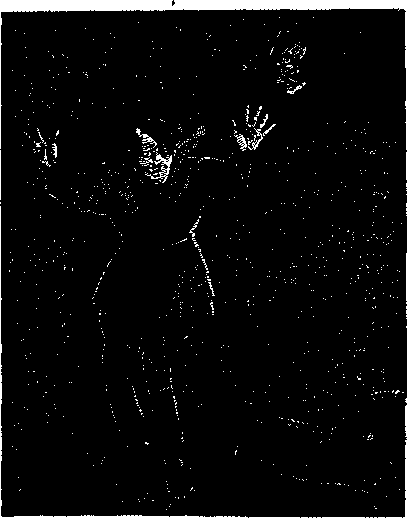
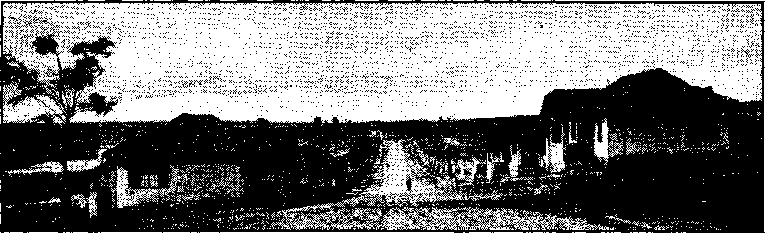
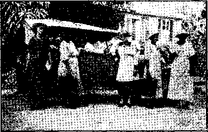

1938
Consolation
Magazine
Contents
President Roosevelt Comforts
Jehovah’s witnesses
Home and Health
Under the Vatican Flag
Eastern Europe
India ,
In the Esterwegen Concentration Camp 12
Protestantism
Counsel by J. F. Rutherford
“Catholic Action”
Leper Asylum of Pirapitingui
West Indies
The Empire State
Cartoonist’s Reply to Editor of
Pittsburgh Catholic Observer
The Raman Notation ■
By Trail and Stream and
Garden Path—The Hawk Moth
British Comment
Poplars in Moonlight
Published every other Wednesday by THE GOLDEN AGE PUBLISHING COMPANY, INC. 117 Adame St., Brooklyn, N. V., U. S. A. President Clayton J. Woodworth
Vise-President Nathan U. Knorr
Secretary and Treasurer Charles E, Washer
Five Cent* a Copy
fl a year In th a United States tLSS to Canada and all other countries
NOTICE TO SUBSCRIBERS
Remittances: For your own safety, remit by poetal or express money order. When coin or Currency Is lost tn the ordinary malls, there la no redress. Remittances from countries other than those named below may be made to the Brooklyn office, but only by International postal money order.
Receipt of a new or renewal subscription win be acknowledged only when requested. Notice of Expiration la sent with the Journal one month before subscription expires. Please renew promptly to avoid loss of copies. Sand change of address direct to us rather than to the post office. Your request should reach us at least two weeks before the date of Issue with which It Is to take effect. Send your old as well as the new address. Copies wfll not be forwarded by the post office to your new address unless extra postage Is provided by you.
Published also in Bohemian, Danish, Dutch, Finnish, French, German, Greek, Japanese, Norwegian, Bolish, Portuguese, Spanish, Swedish, Hungarian. Ukrainian.
OFFICES FOR OTHER COUNTRIES
England 34 Craven Terrace, London, W. S
Canada 40 Irwin Avenue, Toronto E, Ontario Australia 7 Beresford Road, Strathfield, N.S.W.
South Africa 623 Boston House, Cape Town Entered as second-class matter at Brooklyn, N. T., under the Act of March 3, 1879.
Appetizers
Life’s Greatest Racket
a Three boys were boasting about the earning capacity of their fathers. The first one said: “My father can write a few lines, call it poetry, and sell it for five dollars.” The second one said: “That’s nothing, my father is a preacher. He ean write a few lines, get up in church and say them, and it takes six men to carry the money down the aisles.”
Witticisms on Food
■ My opinion of food is that we make too little use of it. We don’t use food as a weapon; but we should, because it is a weapon which is in everybody’s hands. We extend ourselves and our credit to please people with food, but have you thought of punishing people with food!
Have you considered humiliating people or annoying people merely by serving them food ? Have you thought of the twenty different shades of expression that you can achieve through the food you give your guests?
For people of the type who try to embarrass others there is revenge in embarrassing them with food. You can serve them crunehy food that they cannot eat silently, try as they will, or fibrous food that will stick in their teeth or food that is difficult to chase around a plate. Give others food that is hard to cut and chew, or give a whole meal of mushy food.
Or you might serve the finest foods that one would want to eat—with a strong cabbage odor coming from the kitchen. You ean reverse that and greet your guest with a delicious odor from the kitchen and then serve second-rate food. And, of course, you can always give too little food, which is a complete revenge in itself.—Gilbert Seldes, noted author, in an address at the Gourmet Society, New York.
Rules
■ An old Scotsman was smoking in the waiting room of a railway station. A porter said to him: “Don’t you sec that notice on the wall, ‘No Smoking Allowed’"?” .
“Yes, I do,” said the Scot, “but how can I keep all your rules? There’s another on the wall, *Wear Spire!la corsets.’ ”
CONSOLATION
“And in His name shall the nations hope.”—Matthew 12:21, A.R.V. .
Volume XIX Brooklyn, N. ¥., Wednesday, August 10, 1938 Number 493
President Roosevelt Comforts Jehovah’s witnesses
Jehovah, who shall dwell in thy tabernacle f Or who shall rest upon thy holy hillf Even he that leadeth an nneorrupt life, and doeth the thing which is right, and speaketh the truth from his heart. He that hath used no deceit in his tongue, nor done evil to his neighbor, and hath not slandered his neighbor. He that setteth not by himself, but is lowly in his own eyes and maketh much of them that fear Jehovah, He that sweareth unto his neighbor, and disappointeth him not, though it were to his own hindrance. He that hath not given his money upon usury, nor taken reward against the innocent. Who so doeth these things shall never fall.—Psalm 15:1-5,
y President Roosevelt must be
■*—quite a student of the Holy Scrip* tures. He is on record as having k placed the above scripture at the head of a story which he gave to the press on the morning of his fifth anniversary of inauguration,1 and as having said that it should be placed at the top of any story. It is well.
Here in the office the only translations of the above Psalm that are in regular use are: American Revised Authorized (so called) Chicago University Docay (Roman Catholic) ' Fenton
Harkavy
Latter-day Saints (Mormon) h Leeser (Hebrew) .
Margolis (Hebrew)
. Moffatt
Moulton
Revised (English Revision) Rotherham
Schofield
Young
These fifteen versions are all excellent, and so is the presidents, which differs from all of them in many places in the words used to express the same thoughts. Probably the reporters made a slip in the expression “holy will”; and so this has been corrected to read “holy hill”, to agree with the original text of the Hebrew. To further help the president:
AUGUST 10,1938
The word Jehovah is used twice in the Psalm, as in the original Hebrew. The president was misled into using the word Lord in both of • those places. With these slight corrections let his translation stand. It is good enough to suit anybody.
“Them That Fear Jehovah”
The president believes that it will be well in the end with the one that “maketh much of them that fear Jehovah”; and that is just exactly 100-percent true. Jehovah’s witnesses find great comfort in that promise. They stake their eternal destiny on their fear of Jehovah, and their unwillingness to turn from their . devotion to Him, and their service of Him and His truth, though the Devil’s '‘heavens” fall and his “earth” and all that is therein be dissolved into smoke and pass into nothingness.
Lamar 'Clay, seventy years of age, visited some people in La Grange, Georgia, talked with them about the gracious purposes of Jehovah to bring life and happiness to the people on earth and left with them some printed matter explaining the Scriptures. For doing this he was convicted of crime and sentenced to thirty days in a chain gang, with 55 others: He was incarcerated in a cow stable, so filthy and indecent that the city authorities responsible therefor were strongly condemned by the State Department of Public Welfare.
If the president desires, in this instancy to “make much of them that fear Jehovah’’, and desires to send somd message of comfort
3 to Mr. Clay for his courageous stand on Jehovah’s side, as against the clergy of the Devil, he-will be supplied Mr. Clay’s full address on application.
Delinquency of Minors
F m James Dziatkiewiez, himself one M of Jehovah’s witnesses, has two ehil-dren who share his desire to do something to offset the stream of defamation constantly leveled against Jehovah’s name. Mary and John are pupils in the public schools. They use much of their spare time in visiting the people to tell them of Jehovah God’s kingdom and the blessings it will bring to humanity. For so doing they were arrested at Irvington, New Jersey, and charged with juvenile delinquency. The father and mother of these two lovely and' lovable children were also arrested, charged With contributing to the delinquency of minors.
If the president desires, in this instance, to ■make public condemnation of such acts of intolerance against those that fear and serve Jehovah, he will bo given full information on application. Such action on his part not only would fulfill his expressed desire to “make much of them that fear Jehovah”, but would put some fear in the hearts'of religious inquisitors who are historically and actually the servants of the Devil, and it would do much toward keeping alive the liberties of the American people, now fast passing.
Roy D. Goodrich, one of Jehovah’s witnesses, was arrested and-thrown into jail at West Palm Beach, Florida, where he was then beaten and maltreated to such an extent that he became a physical wreck, yet he had violated no law and no charges were ever filed against him. How would it do for the president to “make much of them that fear Jehovah” by public condemnation of such acts as were done in this instance in the West Palm Beach jail by those who have sworn, as has the president himself, to protect the humblest American citizen in his rights, and that regardless of whether he fears Jehovah or not ?
Denial of Education
Walter Gobitas, a good American citizen, and one of Jehovah’s witnesses, is in the grocery business at Minersville, Pennsylvania. He has two. children, Lillian and William.
Federal Judge Maris said of these two children :
[They] are conscientiously opposed to saluting the flag, since they consider such action to be a direct violation of Divine commandments laid down in the Bible, Liberty of conscience means liberty for each individual to decide for himself what is to him religious. To permit public officers to determine whether the views of individuals sincerely held and their acts sincerely undertaken on religious grounds are in fact based on convictions religious in character would be to sound the death knell of -religious liberty. To such a pernicious and alien doctrine this court cannot subscribe.
Lillian and William were denied education ’N by the Minersville school board because they * were conscientious in their fear of Jehovah. If the president, in this instance, desires to “make much of them that fear Jehovah”, here is a wonderful opportunity to publicly reprimand this school board that has undertaken to place its will as to what children must do above the will of Jehovah.
The president might be interested in the fact that numerous radio stations have received persistent requests for free time on the air from associates of a Roman Catholic Franciscan Father, Richard Felix, who is on record as openly advocating acts of intoler-anee and physical violence against Jehovah’s witnesses, and especially Judge Rutherford, for speaking and otherwise disseminating Bible truths in the public interest.
If, in this instance, the president desires to “make much of them that fear Jehovah”, he could very well use his high office to encourage open discussion between an accredited spokesman of the Roman Catholic organization and Judge Rutherford, whose whole life is devoted to aiding “them that fear Jehovah”. Why not a little team work with those that take no stock in the antique, fossilized racket worked from Vatican City? Why be afraid of the truth?
Denial of Right of Petition
Charles R. Hessler, in July, 1935, in Maplewood, New Jersey, circulated a protest and petition addressed to the mayor and city council and was trailed for two hours by an officer in a police car, whose presence in front of the homes he visited intimidated many who wished to sign but were fear- ' fui of retaliation on the part of the police.
CONSOLATION
At length he visited the home of a Catholic, who refused to sign the petition and demanded Hessler’s arrest, which was what the police officer was waiting for. Copies of the protest and petition, which was lawful evidence in the case, were confiscated and Hessler .was searched, all his belongings taken away, and he was held in prison twenty hours before being released in the custody of his attorneys. He was then tried and fined one hundred dollars, with an alternative of thirty days in jail.
The president desires to “make much of them that fear Jehovah”. Here is another rare chance. If memory serves right, he holds a 4 conspicuous place on the National Conference \ of Jews and Christians. Perhaps he could suggest to them that they individually and collectively abide by the law, and keep from such a course as the Jews of ancient time followed against the prophets and later resorted to to put to death the Savior of men, and which course is now fully approved by the Roman Hierarchy and the Protestant clergy in the injustices they so eagerly practice against those who fear Jehovah.
The president should be interested in the proposal of a judge at Northampton, Massachusetts, to send to a reformatory three children of Ignace Opielouski, Belchertown, Massachusetts, because they dared put God above the flag of their country. He might do something about that; also about the smashing of windows of the home of Jehovah’s witnesses at Howard Beach, New York, where gangs took turns in the work, being encouraged to do so by the local Roman Catholic priest.
Denial of Right of Livelihood
George Leoles, Atlanta, Georgia, was a law-abiding citizen of the United States in business in that city for thirty years. His daughter became convinced that it is wrong to put the flag above obedience to Jehovah God. When she refused to salute the flag the American Legion and the Ku KIux Klan picketed his shop and destroyed his business. Their attitude toward “them that fear Jehovah” is worthy of severe executive censure. '
0. R. Moyle, attorney, is one of Jehovah’s witnesses. Because he defended these witnesses and “made much of them that fear Jehovah”, Judge Holleran, of Irvington, New Jersey, threatened, “I will stab you in the back at every opportunity”; another judge AUGUST 10,1938 intimated he would be held in contempt if he continued to aid the witnesses in their struggle to exercise their rights; and on another occasion the editor of this magazine was with him when both were threatened with arrest because Moyle called at a police station in behalf of his clients. Here is another chance for the president to “make much of them that fear Jehovah”, and not make so much of some others, Moyle’s address is 0, R. Moyle, 117 Adams street, Brooklyn, New York. If the president or any of his aides desire to obtain information on any of these eases, apply there.
George Rossier was one of sixty of Jehovah’s witnesses arrested and jailed in Plain-field, New Jersey, and held overnight in quarters crowded to suffocation, for the trial next day. One of those tried was a partially deaf woman. For daring to voice to the presiding magistrate a respectful offer to help that woman he was arbitrarily silenced by the magistrate and ordered locked up for five months. How about a little reproof of those that do not fear Jehovah, by one, who, if he means what he says, desires to “make much of them that do”? Why all the heavy silence?
Why the Ruthless Cruelty?
Charles J. Sandstrom, Ronkonkoma, New York, has a daughter Grace, who conscientiously believes the God-given command at Exodus 20:3-5 means what it says and that the flag should not be saluted. The parents were haled into court and convicted of a criminal offense on the charge of keeping Grace home from school, when the facts were that they were anxious to send her to school and did send her to school but the school officials would not allow her to stay because she did not. “Heil Hitler” after their ideas. She was expelled from school, and threatened with incarceration in a reformatory, and except that friends provided private instruction the parents would have been sent to jail and the daughter committed to the care and companionship of politicians and prostitutes. Here is another good chance to say something in behalf of “them that fear Jehovah”.
The chief executive should also be interested to learn of the arrest and imprisonment of Wallace Vick on the charge of violating the so-called “anti-Nazi law” of New Jersey. At the time of its enactment this statute was claimed by its sponsors to be a measure to prevent Nazi activities in the state. But although
Nazi organizations are very active in New Jersey, Mr. Vick was the only person ever charged with violation of that law, and the real reason why he was charged with it was simply that he is one of “them that fear Jehovah”, of which the president, so he says, is so desirous to make much. Well, let him go ahead and really make it. What is stopping him? .
Harry Whittaker, one of Jehovah’s witnesses, was sentenced to 90 days in the penitentiary of Hudson County, New Jersey, because he is one of such witnesses. That was the only real case against him. While in the penitentiary itself he refused to salute the flag and disobey God’s law in Exodus 20:3-5. Eor this he was sentenced to solitary confinement in the dark dungeon, with nothing to do, no one to talk to, nothing to read, and only bread and water for food. Why the desire in America to ape Hitler?
Odd Treatment of Those
That Fear Jehovah
Those that fear Jehovah receive some odd treatment in the United States. For example, in Chicago, Illinois, Mary Schlorehetka was fined $210 because she refused to salute the flag. At Peoria, on the demand of a priest, over a hundred of Jehovah’s witnesses were arrested, some while sitting in their cars and others while walking on the streets or standing at street corners; their property was confiscated; they were denied the right to telephone for legal aid, were threatened with violence by police officials and were abused by them, and were confined in filthy prison cells and denied food while incarcerated. At Wheaton, Illinois, Mildred Slosser was fined $125 for informing her neighbors about God’s kingdom for which, it is believed, the president prays.
And about Pennsylvania, where the editor lived for many years. It is the Keystone State, and in that state, only a few months ago, men and women were confined in the same cell of the prison, at Brownsville, because they were Jehovah’s witnesses. About the same time, at Canonsburg, in the same state, children were beaten, choked, ridiculed, tortured, expelled from school, and refused medical aid because they refused to salute the flag. At Coatesville the mayor said Jehovah’s witnesses must stay 6 out of town. At Easton radio station WEST was boycotted for carrying the programs of Judge Rutherford.
At Mauch Chunk Jehovah’s witnesses were jailed and the police admitted that the arrests were made at the behest of the clergy. At Millsboro officers of the law and a mob joined in beating, kicking, choking and striking Jehovah’s witnesses, ransacking their automobiles, and taking and destroying the contents consisting of Bible literature.
At Monessen over a hundred of Jehovah’s witnesses were convicted without evidence and without trial and thrown into prison for exercising the right of petition. f
At New Philadelphia 44 of Jehovah’s witnesses were assaulted and imprisoned on demand of priests of the town, their Bible literature destroyed, and their automobiles damaged, and they were fined $5 each. Their only “offense” was that of disseminating Bible truths among the people of the community.
At Philadelphia radio station WIP was threatened with boycott by Cardinal Dougherty and one of his priests, James Clarke, for daring to broadcast the Bible questions and answers of Judge Rutherford.
At Pittston the editor was himself arrested for calling at police headquarters to inquire as to others of Jehovah’s witnesses who had been jailed. He was fingerprinted, made to sleep on a plank with no coverings, and threatened with physical harm, because he associated himself with Jehovah’s witnesses. •
When the president gets around to carrying out his program of “making much of them that fear Jehovah” it ought to be interesting to every true American. The most surprised of all will be Jehovah’s witnesses themselves. Thus far the president’s good will to those who love God has been expressed only verbally.
Four Million Houses Needed
♦ Some are surprised that the United States X needs four million new homes, but President Roosevelt supplies the facts. In the seven years prior to 1930 the annual average of new homes built was 800,000; then it suddenly dropped to less than one-fourth that number, where it has since remained. Meantime there has been a growth in number of families needing homes, and 800,000 units per year for the next five years would not more than meet the real needs of the American people during that period.
CONSOLATION
Home and Health
The Sealing Power of Wheat
♦ We hear a great deal nowadays about the nourishing and sustaining powers of whole wheat, but very few people know that wheat was once considered to have great external healing powers as well. An old Roman doctor mentions in his writings the case of a man who cured himself of dropsy by burying himself in a box filled with wheat, so that only his head was visible. The wheat drew out all water, and the man was sound again.
. Whether or not they got the idea from this case is not stated, but it is recorded that the old Roman doctors healed gout by having the patient cover his legs up to the knees with wheat and remain so until he obtained relief.
For sore throat the Romans used wheat bruised, cooked in water, and strained, as a gargle. Carbuncles were treated with poultices of wheat* flour, chopped celery, and honey. Tetter, dry scab, ringworm and like ailments they treated with wheat flour mixed with incense and wine, applied as a plaster.
For sprains, they bruised wheat cooked in vinegar and applied it as a poultice.
Turbid wine or cider they cleared as follows; One part wheat flour, one part fresh milk, and one egg-white, mixed well and dropped slowly into the barrel. After four days they drew it into a clean barrel. When wine showed a vinegar taste, they put into a small sack one pound whole wheat and ope pound yellow wax chopped fine, and hung it in the barrel.
While these last two items cannot be considered purely medicinal, they do illustrate the purifying quality of the whole wheat; and who is there to prove that,wine cleared with whole wheat is not more beneficial to the system than more ordinary wine?—Dr. Carl Q. Schilling, New Jersey.
Sweeten Your Linoleum
Clean the Cleaner Too
AUGUST 1936
For Constipation
♦ The most obstinate case of constipation can be absolutely cured, and the body can be nourished in an extraordinary manner, by the following method, although I cannot speak with sureness in cases where the appendix has been removed. Those who have not yet had this unnecessary operation will never need it if they live to a million, with this feed.
Soak a handful or so, according to taste and age (and fastidiousness), of wheat as it comes from the farm, that is, before the sharks or millers begin to denature it, in water to cover it by an inch. Do this, say, at evening, and it is ready for morning’s breakfast two days after (36 hours approximately). When breakfast is ready, drink off the water, put milk and fruit in a pan or dish, and fall to. Try to avoid poison sugars, etc., and after about five days’ treatment the bowels will begin to function naturally; and if this treatment is continued throughout life, the doctor will not be needed. Do not soak wheat in aluminum, if you have any brains; and eat it raw, not cooked.
I have been on this wonderful diet for four years now, and have got others on it, too. —A. L. Philpott.
How to Embalm Mice
♦ A friend of Consolation, but not a friend of mice, one night mixed some flour and sugar together in a shallow tray and placed it where mice could get at it. They had a good time. The next night he did the same thing, and all the mice were happy once more. The next night the blooming rascal put out the same tray, with sugar, but substituted plaster of Paris for the flour. The mice came as before, ate freely, drank copiously, and lost interest in life.
Attic Floors Keep Heat In
♦ Studies made of consumption of fuel oil for heating purposes show that where attios are provided with floors the consumption is 5.6 percent less than where the floors have not been laid. Heat rises, and anything to prevent its escape at the top of the house makes that much difference in the cost of heating the home.
' 1
Under the Vatican Flag
“Received the Suggestion Coldly”
The “Venerable Brethren” at the Vatican are such ultra-liars that when the Japanese Catholic Admiral Yamamota called on Cardinal Paeelli to urge that the Vatican appoint a diplomatic representative to Man-chukuo, the newspapers had to send out the report, “The Vatican apparently has received the suggestion coldly.” Why be so foolish over the announcement of the deal that has been cooked up between Japan and the pope? Nobody is deceived. The facts are, almost unquestionably, that it was the pope himself who fixed the interview between Pace Hi and Yamamota and issued instructions that the deal must first be denied, so that the Vatican’s unbroken record of never telling the truth about anything might be maintained.
“Photograph”
of Christ >
Trying to make it palatable
A long linen cloth, supposed to have been the shroud of Christ, is exhibited in certain Catholic sections. It contains stains (and marks which dimly outline, in negative, the figure of a man about 5 feet 11 inches tall, and weighing approximately 170 pounds. Various evidences are adduced in support of the claim that this linen cloth was indeed the shroud in which the Lord was buried, it being folded over the head and covering the entire body. The cloth, therefore, is at least four yards long, as if taken from a bolt of white goods. Even if it be conceded that there is much about this relic that is remarkable, yet the Scriptures, the source of dependable information, state that Christ’s shroud consisted not of one cloth, but of more than one, and that His head was wound about with a napkin; hence, the entire -figure could not have appeared on a single piece of cloth. See John 20:6,7, which reads.- “Then cometh Simon Peter following him [John], and went into the sepulchre, and seeth the linen clothes [plural] lie, and the napkin, that was about his head, not lying with the linen clothes, but wrapped together in a place by itself.” Hence, the shroud, even if a genuine shroud, is obviously not that of Christ.
The Language of Despair
The language of despair is easily recognized. It is that of a man or an organization that is caught in a network of lies and betrays in every sentence it utters thereafter that it is lying, knows it is lying, and knows it is caught; and that sooner or later it will have to quit lying, for the reason that nobody thenceforth will pay any attention. The Boman Hierarchy is like that. All the silly lies repeated in the following editorial set in boldface type, in The Register, (‘"boiler-plate” mouthpiece of the Hierarchy, published simultaneously in Denver, Kansas City, Cincinnati, Altoona and many other places), have been answered so many times that they need no further explanations, but the editorial is interesting, because it shows the real concern, the real despair of the Hierarchy because of the flood of truth that issues from Judge Rutherford’s pen, and the activity of Jehovah’s witnesses in putting these truths into the hands of the honest Catholic population. The Hierarchy well knows that once the people get the Truth, the jig is all up for the Hierarchy. What sensible human creature could ever say that, knowing a certain thing to be a lie, or tissue of lies, he preferred to believe it anyway, and pay the price? .
The Register Speaks
Tua Judge Prognosticates
There has never been an age like the present in which civilization could reckon so few thinkers. It is almost accepted as an axiom in our civilization that thought should not be controlled by logic or reason, but should receive its inspiration from the emotional nature of man. Even the laws of God— natural and supernatural—are tampered with, as our civilization gives forth the cry: “Let us make God to our image and likeness!” Protestantism has . strained its supposed Christianity away from all the fundamental doctrines until at present there is nothing left to build upon. .
Catholics are being influenced by the inertia of their civilization, ah d they bother little to learn and know the fundamental doctrines of Christianity. They have not the courage to fortify themselves with the knowledge that the Church has to offer. To acquire knowledge by the only way, the hard way of expended effort, is to them irksome. The light frothy literature, the sweet strains of music from the cinema and the radio are all that they are concerned with in life as they ply their way to shipwreck.
In the midst of this confusion we have the arising (we might say of another “false prophet,” but we have no intentions of being generous) of an ignorant, raving demagogue. Daily or weekly we listen to the blatherings of a man who calls himself a judge, speaking via the airways, telling his radio audience that religion is a racket, and his racket the only religion. He is a brilliant contributor to an age of confusion. He is more apt at the art of confusing than any. If a businessman with no knowledge of medicine should suddenly take the stand and pronounce his views on the art and science of medicine as the only contribution of any value, he would be booed down by the attending audience. But if in theology one arises and pronounces his views as the final contribution to that science, he is listened to with eager ears.
We do not blame Judge Rutherford for his Venomous tirades against the Catholic Church, since he is a madman, but we do blame those who claim to be his listening audience and who make up the contribution of the millions of dollars to keep this insult to our civilization in progress.
In case our reader is not familiar with the Judge’s prognostications, we will itemize some of them as published in his works and proclaimed on the air;
The Judge claims to fight against all religions and says that he does not teach religion. He does not teach religion, that is true, but he pretends to teach religion and makes of himself the only infallible prophet. He is right in his claim that he does hot teach religion since he is only a racketeer: “He mikes uuwarranted assumptions, brazen false-AU GUST 10,1918 hoods, agonizing prophecies, misapplied Biblical quotations, and weird interpretations of the Sacred Scriptures into an intellectual dish that must give many a ‘Witness of Jehovah’ a belly aehe in the place where his brains ought to be.”—(The Rutft-erford Racket, C. P. Windle.)
Our civilization has two types of ignorance. First, the simple ignorance of one who does not know but who is willing to learn; second, the compound ignorance of one who doesn’t know, and claims that there is nothing worth knowing except what he knows, and we can call this type of ignorant man a “snob.”
This is the Rutherford mentality, the snob. He knows nothing of exegesis in the interpretation of the Scriptures and pretends to know all. There is no infallible Church to him. He has the only infallibility in the world. He pretends to prophesy. He prophesied the end of the world in 1925, and, when 1925 eame and went and found the sun still up in her heavens, he explained that the Lord extended a special grace to permit the remnant of the faithful to be gathered, perhaps as a special favor of grace through Rutherford.
In 1930 another prophecy hit the dust. Judge Rutherford went to a lot of pains to build a palace for King David to serve him when he should arrive on earth, but unfortunately the beautiful palatial residence remained untenanted.
His pretended interpretation of the Scriptures is infantile. For example a simple passage from the Bible:. “He was a mighty hunter before the Lord” (Gen. x, 9). Judge Rutherford with no knowledge of the original languages in which the Scripture was written, with no aid of any kind, gave the interpretation of this text as follows: “It is written of Nimrod that he was a mighty hunter before (that is, superior or greater than) the Almighty God.” [*]
We repeat again, we do not blame Judge Rutherford for his work since he is an ignorant ranter, hut we do blame those thousands who pour good American dollars into the coffers to finance a campaign of irreligion, fanaticism, and just plain nonsense.—A. J. G.
* McClintock & Strong’s Cyclopedia of Biblical, Theological and Ecclesiastical Literature, Volume VII, under the head of “Nimrod”, contains some information that the scholars (?) for whom The Register speaks could consider with profit :
But the preposition lipnei [Hebrew; translated “before”] has often, as Genesius admits, a hostile sense—in front of, for the purpose of opposing (Numbers 16:2; 1 Chronicles 14:8; 2 Chronicles 14:10) and the Septuagint gives it such a sense in the verse under consideration ivuvriov Kuyfou, “against the Lord.” .The Targums and Josephus give the preposition this hostile meaning The context also undines us to it.
(To he continued')
Eastern Europe
Prisoners in the Balkans
The detestable practice of solitary confinement persists in all the countries we visited, and far too often the first month has to be passed without books or work. The fan
tastic doctrine that the prisoner is well employed in thinking over the enormity of his crime was solemnly offered to us on several occasions. Until solitary confinement can be abolished every effort should be made to obtain some means of mitigating its dangerous , effects by occupation. Its most horrible development is in dark punishment cells. We have heard of prisoners passing up to a month in such places, and of some whose eyesight has been ruined by the experience.
:In Yugoslavia, after solitary confinement comes the second grade of imprisonment, ordinary within-th e-walls treatment; after two-fifths of the sentence has been served a freer regime is allowed. At one village we saw men at this stage, coming and going freely, with carts or on foot, like ordinary workmen, without a guard. After half the sentence prisoners are eligible for conditional liberation. This system, unfortunately, does not extend to political prisoners nor to the unfortunate sect of the Nazarenes. These people are religious pacifists, condemned as "deserters” by the military courts. As they have not been “reformed” (unless they renounce their creed) they cannot benefit by remission as the ordinary . criminals do. Moreover, when released they are liable to being sent back to the army, and the whole miserable business begins again, so that between 20 and 40 they are hardly out of prison.
In one country we heard on good authority of two recent cases where unfortunate men accused of murder were so cruelly ill-used that rather than suffer more they “confessed” with full details, and were saved from conviction only because the supposed victims turned up alive and well. One of these men suffered agonies from having the intestines inflated by a pump thrust up the anus. A lad accused of theft was actually killed by a police officer who jabbed at his temple with a fork to force an admission of guilt. The case was interpreted as suicide.—Margery Fry, in the Manchester Guardian. ,
The War on the Jews in Poland
♦ To make a place in the sun for “Aryan” peasant children growing up in their land Polish politicians are making it mighty clear to the 3,150,000 Jews (ten percent of the population) that their room is better than their company, and they are making it so warm for the Hebrews that in the last few years 36,000 Jewish enterprises all over the country have had to close their doors. The persecutions are > only less brutal than in Germany. The politicians say quite frankly that they hope to force 50,000 to emigrate monthly, and to measurably solve their economic and unemployment problems by driving all the Jews out of the country within the next few years. It is the expressed purpose of the national government not to give even a street cleaner's job to a single Jew.
In the pogrom at Brest-Lit ovsk, lasting from seven at night until ten the next morning, 22,000 Jews were at the mercy of a mob, with no protection from the police. The mob aimed at destroying the Jewish sources of livelihood, and hence, in raiding business premises, smashed everything to bits, windows, looking-glasses, sewing machines and tools. When entering a home, not an article was spared. Pictures were cut in their frames; every article of clothing, including bed clothing, was slit to ribbons. In one case, hours after the pogrom, one of the destroyers came back for his axe, but his victim did not dare report him to the police.
Privileged Society for Exports
♦ One of the clever modern ways of robbing the common people has been in operation in Yugoslavia. In the year 1936, when Yugoslavian crops were good and world prices were high and rising rapidly the Privileged So- ’ -ciety for Exports, which has a monopoly of the purchase of the country’s surplus produce, was not allowed to raise its purchase price at all in June, July and August, during which months the bulk of the crops are sold, but in September, after the poorer peasants had been compelled to sell their grain to pay the tax collectors, prices were raised to the world level and the “Privileged Society for Exports” cleared millions as they unloaded the huge stocks of grain paid for at the bargain prices in force earlier in the season.
India
Christinas Wishes from Heathen
♦ This is to acknowledge receipt of a card showing photograph of the splendid Devkaran Nanjee buildings in Bombay, India. The interior of the folder explains that it is sent “with best wishes for a Happy Christmas and a bright new year”. The gentlemen who had the card prepared are Choonilal Devharan Nanjee and Fran [al Devharan Nanjee, proprietors of three large concerns in the charming seaport and metropolis of western India. These gentlemen are very orthodox Hindus, who would no more think of identifying themselves with Christ than would a Christian of identifying himself with the Hindu gods. They sent the Christmas card merely as a matter of business. And that is all there is to the whole Christmas business. It does not now and never did celebrate the birth of Christ, and is a wholly pagan ceremony grafted upon or carried over into modern religion.
Poltergeist at Jaipur, India
♦ Deeds of poltergeist (malicious physical acts by invisible demons) are reported from Jaipur, India, in the Lucknow (India) Pioneer. On a certain site, years ago, many losses were sustained by such deeds. The house was demolished and rebuilt. Now the deeds have begun again. They consist in the malicious destruction of clothing by fire. No matter where the clothes are, even if in steel boxes, or if wringing ■wet with wmter, or if of any materials, they suddenly take fire and are reduced to ashes, and they have done this in plain sight of the police, sent there to investigate. There are similar cases in other homes near by, and one woman was burned to death.
What Is a Hindu?
♦ Most dictionaries describe a Hindu (or Hindoo) as “a native of Hindustan (India)”. This, as far as India is concerned, is definitely an improper definition. In India and England the native of India is known as an Indian. The American Indians are distinguished as “Bed Indians”. The Indian usage of the term “Hindu” limits it to adherents of the Hindu religion, of which there are 200,000,000, by far the largest religious body in India, and for that reason, probably, the terms Hindu and Indian are generally used synonymously.
AUGUST IC, 1938
The Mayor of Madras
♦ Because the mayor of Madras, India, a city of a million persons, is of the untouchable caste there are streets upon which he may not walk, wells from which he may not drink, and hundreds of doors he may not enter. Many clerks in the employ of the city will not handle papers he has touched. Many shop-keepers will not sell goods to persons who associate with him, barbers will not shave them, mailmen will not deliver their mail, water carriers will not take them water, and teachers will not teach their children. But lowly as is the estate of the mayor of Madras, he is immeasurably higher than Hitler, Stalin, Mussolini, Franco or Horthy, because his sorrows are now and temporary.
Sir Jagadis Bose’s Discoveries
♦ Sir Jagadis Chunder Bose, India’s foremost scientist, is dead at 78 years. He was the inventor of the erescograph, a recorder of plant life capable of magnifying any movement as much as ten million times. By means of this instrument he convinced scientists that plants are sensitive to touch, to a passing cloud, to bad air, to poisons, to drugs, but not to sound. They become excited and fatigued, and when they die, they do so with a spasm at the instant of death.
Human Sacrifice in Punjab
♦. British police arrested a priest and 25 villagers at Gunpur, near Nahan, 800 miles north of Bombay, for seizing a young man of 23, & visitor from a neighboring town, parading hiifi through the streets with a flower garland about his neck, and then beheading him before the village temple, to propitiate the rain god. The boobs who think that what the world needs is more religion instead of less should move to India and settle near Nahan.
Afghans in India
♦ For six months in the year several hundred thousand Afghans become British subjects and are safer in northern India, carrying on their trading, than they are in their own country. On crossing the border they have to stack their arms, but pick them up again when they return to their own land.
11
In the Esterwegen Concentration Camp
THERE were prisoners from all walks of life and views of world affairs in the Esterwegen camp. At that place there were Reichstag deputies, owners of factories and estates, millionaires, attorneys, high and inferior officials of the state and corporations, merchants, artisans, laborers, Communists, Socialists, freethinkers, Masons, Jews and Jehovah’s witnesses, thrown together. The principal reason of their coining to the camp was that they entertained views along general lines other than as proclaimed in the book My Struggle, or “Mythology of the Twentieth Century”, and had the courage to speak about it.

Inspiration from the phmons. 1 ‘ On J’ridtiy night 1 was not even thinking of Austria. Then suddenly I knew that the deed and the hour was predetermined in history. I did not make the decision. It came to me. I did not consult anyone. I gave the orders. ”—Statement by Adolf Hitler.
This camp dealt chiefly with people who had a conviction or a faith and, for that reason, did not want to be hypocrites. At any rate, there were always reasons which were not sufficient to give these persons a decent trial. When I was there, there were also a number of prisoners who were over 60 years old. One of them was 72 years old and, aside from that, there were two blind persons in the camp—a Communist and a witness of Jehovah.
The prisoners were separated into two divisions—“political prisoners” and “habitual criminals”. All of the above-named persons— even homosexuals—were assigned to the section for political prisoners. The political prisoners wore green, threadbare uniforms which were marked on the backs with large yellow dots. The political prisoners were placed on the right side of the camp street, and the habitual criminals or “Bevauer”, as they were called, on the left side.
The professional criminals were there in “precautionary custody”. As stated by the Secret Service men and officers, the possibility of committing offense was first taken from them, through robbing them of their freedom, and, besides, they are to be frightened from doing again what violates the instructions of the Third Reich. Some of them were punished before. No hope for freedom was held out for them.
The prisoners were compelled to work daily in the marshes. On the way to the marshes they were compelled to sing songs. Songs always had to be sung when marching, no matter whether it was inside or outside the camp. Often they had to sing while running in step. Canals arc dug in the marshes, in wider to drain them. Then the peat is shoveled into rectangular piles and left there to dry. Besides that, new streets are built. In this way the extensive peat districts of Ostfriesland are brought under cultivation and, indeed, with the sweat, with the blood—even with the life —and with the money of the prisoners. Why ? Because the prisoners have to pay for their upkeep in the camp as I had to pay for a stay in the sanitarium.
The prisoner has the “privilege” of paying more than two marks for every day of his stay in the camp, and if he is unable to pay, his property is taken from him as well as house furniture; and if he is entirely without mean's, he obtains emergency work and,
from his insignificant remuneration, has to pay on a percentage basis each week, which is equivalent to extra punishment. It also happens that the parents are drawn into the matter of payment, or even other dependents who own property.
He does not receive any kind of monetary or material benefits for labor performed in the concentration camp, but must pay for every’- day of his stay in the eamp for entirely inadequate food, miserable clothing, for mistreatment endured, for whippings and bodily injury; for all of this he has to pay more than 2 marks per day.
At times it happens that persons are employed according to their qualifications. Thus tailors have to make uniforms for the officials in the camp or for the S.S. men; also for other troop divisions. Carpenters have to make furniture—partly for the camp, partly for other officials; all without any compensation whatsoever and under threat of and use of every kind of persecution.
While I was there the Reichstag representative, Dr. Leber, a Socialist, and his colleague, Mr. Heilmann, were also in the Esterwegen camp. Dr. Leber and I lodged together in Barrack No. 9, and I had many opportunities to converse with him. One day he and Heilmann were penned in the dog kennel, where, next, both of them were ordered to act as if they were dogs. When any of the S. S. men went past the. vicinity of the dog kennel, they—Dr. Leber and Heilmann—had to bark like dogs.
Not satisfied with that, Heilmann was compelled to drink his own urine, and Dr. Leber was compelled to eat his own excrement. The result of this was that Dr. Leber contracted a stomach and intestinal ailment which ruined him physically. In the camp there was a Secret Service physician who, in the rarest eases, relieves prisoners with inward ailments. So also in the ease of Dr. Leber. Every novice could see, by the change of the color of the face, his state of mind, his physical breakdown and his continued condition of suffering, that these degraded methods had caused severe sickness.
All of this is not sufficient to satisfy the demands of the camp spirit. In addition to the daily routine are added exercises—fifty and more “bend knee” one after another; falling down on the floor and standing up again;
AUGUST 10. 1038 leaping; hopping; rolling on the ground, etc. The witnesses of Jehovah arc daily the targets for every kind of persecution, terror and vile treatment. With the use of the aforementioned means and methods, an attempt is made to force them to give up their faith in Jehovah God and His Word, the Bible. Of course, they do not get any Bibles in the camp, nor at the present time in the prisons. Attempts arc made with every possible and impossible means to force them to sign an affirmation declaring that they no longer want to be witnesses of Jehovah and that they no longer want to have any further contact and connection with Jehovah’s witnesses, and that they do not want to read any more literature of Jehovah’s witnesses.
In order to make them appear especially ridiculous to the other prisoners, they are called “’paradise birds”, “heaven clowns,” “Jcsus-graspers,” and, occasionally, also “Jehovah”. Those who do not yield and who maintain their faith unwaveringly carry as a sign, to make it known publicly and also because they belong to the punishment company, a yellow band below the knees. According to the opinion of the S. S. men, such are the worst traitors, the incorrigible, the offscouring of mankind.
The cruelties referred to in issue No. 370 are not the only ones that are applied to them. The report-leader, Tar re, himself undertook an attack on a number of Jehovah’s witnesses in the bathing house for the prisoners. They had to undress themselves and were manipulated by Tar re personally with the splashing and jets of cold water. Cold water with special atmospheric pressure was squirted on the sex organs and on the abdomen.
During this mistreatment they were continually asked if they still wanted to remain a witness of Jehovah, and they were constantly threatened with a continuation of these measures until they would agree to no longer be a Jehovah’s witness. As this admission was not made, he continued these terrible cruelties until the complete exhaustion of the victims.
The result of this beastly treatment was an abnormal swelling of the sex organs, combined with excruciating pain, so that finally they landed in the sanitary room. Here Tarrc daily went past and asked if they still were Jehovah’s witnesses, and threatened them with all possible other tortures, because they maintained their faith unwaveringly.
13
' Net only are the blood-stopping chains pressed together on the wrists, but the fingers are also elamped together in a crooked posi-1 tion. But not only were these horrible tortures repeated so long that the fingers of the martyred became crippled, which' I myself witnessed—they went even further, so that the final result was that their hands were completely paralyzed. The names of such victims can and will be made known as far as we obtain the consent of these tortured persons.
The Hand of Jehovah God
About fourteen days before September 28, 1935, it was announced what was to be done on this day to the witnesses of Jehovah who refused to sign the afore-mentioned affirmation. The most brutal and arbitrary measures pale into insignificance, compared with what was now to be done. They were daily threatened with “September 28-”. Even prisoners were incited to stand up against the steadfast witnesses, in order to instill dread in them from every direction.
But what happened then? The report-leader, Tarr6, an arrogant and presumptuous brute who was always conjuring up new methods of torture and which would, if possible, deprive the prisoners of any time to relax and reflect, met with an accident with a motorcycle on the afternoon of September 27. Apparently the evening of September 27 was to have been a prelude at the sound of a bugle. Such a prelude they liked, as this was the preliminary for greater acts which were systematically prearranged. Instead of coming into the camp, he came to the hospital. He broke his arm in the motorcycle accident. As a result, Nazidom’s support and strong arm was not in the eamp on September 28. It was the quietest day Jehovah’s witnesses had in the camp. ,
Jehovah’s witnesses were usually assigned to the most menial work. So there was also a Cesspool company to which at that time Jehovah's witnesses and Jews always were assigned. The excrement tank had to be emptied regularly with the bare hands, which, of course, also caused the clothing to become soiled with excrement. .
It was reported to me that the Esterwegen camp was abolished some time ago. The reportleader TarrS, who was there, now lives as a prisoner in the Dachau concentration camp.
14
As this camp is also notorious beyond the boundaries of Germany, Tarr6 can have a good opportunity there, to daily reflect on how bitter those cruelties are which he always himself indulged in, and also to think of how corruptly and brutally he himself had acted.
What, now, is the real purpose of these brutalities ¥ All of these acts a^%E3gof terrorism are thoroughly predetermined and purposely performed at the command of the German government. I say “at the command of the German government’’ because the commander himself stated at the time of our discharge that this is a fact and, under threat, emphatically warned us not to divulge anything outside of the camp about the happenings in the concentration camp, as otherwise such persons are immediately again brought back to the camp; and what would then be done to them, we certainly knew ourselves.
Those gruesome Inquisition methods in the camps serve the purpose, according to their own statements, to instill the prisoners with fear and terror, so that every thought of opposition against the present system will be stifled, and every thought of any kind of resistance, and every free expression of opinion, will be ended.
What is here said may be severe, but it is the truth. But how much harder is it for the many thousands and hundreds of thousands who became victims of this gruesome maltreatment! Is it not bitter for them, when facts are disclosed, that the facts are not believed? I want to be silent about the frightful cruelties on the part of the Gestapo officials in the Gestapo cellars and cells, and the many acts*of terrorism which were committed ■ by the S.A. and tito S.S. At “Christmas”, 1935, a clergyman in a prison at Cologne said in his sermon that at the present time 2£ million persons share the same fate with us. How many must there be now, when no fewer prisons and no fewer eamps have come into existence, but just the opposite? There may be people who believe what the German government says.
The German government is aware of all the , reports about the true conditions in the German concentration camps, with the assertion in return that these are lying reports and represent atrocity propaganda of the enemy. Now what does the German government do in order to make its assertions appear believable and
consolation to justify itself in the eyes of the world V It now and then permits foreign commissions to visit a eamp. But that is at best a miserable faree and a further fraud; for these commissions never learn in this way the true state of affairs, and certainly not from the prisoners, who no doubt are questioned; for they do not risk telling the truth in the presence of their tormentors, because otherwise they would be tortured to death. I witnessed it myself as to how foreign commissions were informed that Esterwegen is only a "schooling eamp” where the prisoners are taught for three months, and then when a prisoner, in ignorance of the state of affairs, though already in the camp a long time, upon being questioned by the commission, said, “I am already here twenty months,” the commander was not so likely to be embarrassed, because he, intentionally and knowingly, falsely, but with ease and self-complacency, informed the commission, by saying no, that this was an exceptional case, that he, the prisoner, really belonged to the incorrigibles.
The same fraud was committed in regard to the food. Either there was good food the day the commission came, or a great deal of meat was carried to the prisoners’ kitch
en during the camp visit; and when the commission had left the camp (with good impressions, it is to be understood), all the meat was again carried out of the camp. If the food in the camps is really as good as was told to the commissions, why does the prisoner need money in order to buy food?
If what the German government states, namely, that all the exposures about the conditions in the camps and regarding the prisons and workhouses are lies, then there is but one way that is honorable to justify the assertion of the German government, and that way is that the maltreated ones who have become known be given their freedom; that passports be given them and that in foreign countries they be granted liberty to personally refute what was reported about them. But the opposite is done.
' The first thing that the Gestapo did, when I was given my freedom, consisted in their taking away my passpOrt and placing me under police surveillance. Although my wife, who was a foreigner, likewise ordered and paid for a passport, it was not given to her, as I had the intention to- go to my relatives AUQUST 10,1938 abroad in order to recuperate. Even the money for the passport for which my wife paid was not returned to us.
The Third Reich employs a notorioils stoolpigeon system in the Gestapo; the German secret state police. The decoys or spies are persons who are bought by the Gestapo, who by no means are convinced representatives of National Socialism, a large percent being composed of hypocrites, which I witnessed myself. They are the paid treacherous tools of the Gestapo who continually spy on their fellow men.
These spies are special instruments of the Gestapo and the Third Reich. They are in the camps, in the prisons, in every city and in every place and are also to be found abroad. They spy on their fellow men, in order to deliver them into the inhuman hands of the Gestapo. They are a further reason that free expression of opinion and mutual confidence are vanished in Germany.
I am familiar with all these hazards and intrigues and the infamous dealings of the Third Reich. I know, too, that through these disclosures of facts I am liable to further persecutions by the Gestapo, but, notwithstanding this, I will not refrain from publicly making known the truth which the Third Reich suppresses with all the means at its command. In the interest of mankind I deem it my duty to speak about it, so that honest-minded persons who love righteousness may be assured that the many disclosures about the frightful acts of terror and the conditions in tha German concentration camps are absolutely true.
This is not a complete, comprehensive report, as it deals only with particulars and personal impressions, in order that the reader may thereby get an approximate view of the situation. In order to corroborate the evidence of the truth and vouch for the authenticity, and, on the other hand, to do that which I fully and wholeheartedly realize to be my responsibility, and prove that I have taken up and will carry through the battle against lies, slander and brutality with determination, I wish to attest the afore-mentioned with my own signature and to encourage all persons who stand for truth and righteousness to actively take part in this fight.—Arthur Winkler.* (Translated from the German Trost-Consolation]
’[The courageous man who wrote this has doubtlera ere now paid for it with his life.—Ed.]
Protestantism
Dishonoring Jehovah’s Name
Any person with a little education may, in a few moments, ascertain that the personal name of the great Creator is Jehovah, which name He gives to himself, to indicate His purpose that only justice shall abide forever. The name occurs 6,587 times in the Scriptures, which holy men wrote at His dic-tatipn. Translators have concealed this information from the casual reader, but, even so, ' the. word Jehovah occurs four times in the King James version, and hundreds of times in combi nation words. But now one of these modern theologians, Prof. Julius A. Brewer, of the Union Theological Seminary, New York, has decided to get out a new translation, and will omit the name of the Creator altogether, using .. the appellation affected by Britain’s titled aris-toeraey in its place. Professor Brewer’s excuse for letting the Creator down to the level of a member of the House of Lords is that the name Jehovah has not been favorably accepted in American churches. ‘The threelegged milk stool for him; and the sooner, the better. If anyone can describe what benefit accrues to anybody from listening to such a pious fraud, speak up. _
Schnatzing at a Straw
♦ A church paper put out by the "Reverend” Arthur P. Sehnatz, minister of the First Reformed church, Cincinnati, Ohio, urges his flock not to obtain any of the literature put out by Judge Rutherford and his friends because it “ridicules the doctrines of all the other established churches, which have a respectable history”. Mr. Sehnatz sees a time coming when he will have to go to work to support himself and his family; hence the outcry. It is true enough, in this instance, that "a drowning man will sehnatz at a straw”, but it will do no 'good. Honest toil is the only way out, and even that not for long.
“Bound to Go Over”
♦ No dictator, no king, no president can save us. We are bound to go over unless the strong arm of God delivers us.—Bishop W. N. Ainsworth, presiding officer of the North Georgia Methodist Church, in an address in' Atlanta, Ga.
1 16
What Is Wrong?
♦ What is wrong with the church of God, that it has become so feeble, so ineffective in the world today? Our program is pedestrian; our wisdom, of this world; our Lord and Master, one whom we have reduced to our own level and domesticated. We modern men and women are gone astray in the wilderness, and our soul fainteth in us. We are a lost and fearful people. y
But when this near-despairing modern man *" looks to the Church, what does he see? Does he discover in us those who are sure in the midst of unsureness, courageous and calm in a day of hysteria ? Do we seem, as he gazes at us, to be such as have looked into Heaven; such as have found Him who has all things safely in His eternal hand? ... Or does he find us as timid as other men, surrendering with them to the clamor of a day that is halfmade, and only too ready to substitute a childish sort of ecclesiastical rigamarole for the God-inspired adventure into sanity which is really Christianity, that adventure which costs much and matters?—Reverend Dr. Bernard Iddings Bell, of Providence, R.I., in an address in New York.
Plain Admission of Guilt
♦ Asserting that the next war is at hand, and prophesying that in it thousands of clergymen will refuse to fight and refuse conscription (which prophecy is almost certainly incorrect), the Reverend Clayton Morrison, editor of The Christian Century, Chicago, in an address at Columbus, Ohio, made the following plain admission:
Mankind will turn on its heels in scorn of a church which does onee more what the churches did in 1914 and 1917.
Common-Sense Pronouncements
♦ The Quakers think the payment of unemployment benefits is as legitimate a charge against the receipts of a business as is the payment of dividends to absentee stockholders, and that there is no valid reason why the Red Cross or the Community Chest should be required to support industrial workers .when new machinery is installed or during seasons of slack employment.
CONSOLATION
THE Roman Catholic Hierarchy is now strenuously pushing a campaign to in. crease religion and religionists in America; V Politicians and men^of Big Business are taking a part in that campaign, and many other persons are induced to believe that more religion is a great necessity and will constitute ’ the salvation of the country. Even some Christians have doubts, and others are asking: Should not all Christians rally to this movement and earnestly support it?
All thinking persons plainly see that radicalism is increasing in America, and the sober-minded are induced to believe that such radicalism must be resisted by a religious movement. Catholics, Protestants and Jewish clergymen are in the lead in such a religious movement and are loudly proclaiming that more religion is necessary for the salvation of tiie people. It is a plain case of the blind I fading the blind, and the ditch of despair is their destiny.—Matthew 15; 14.
T^he “religious campaign” that is now being put on in America is in fact a political movement, the purpose of which is to gain control of America by the forces of Home and to establish in America a totalitarian government, which will regiment all the people and compel obedience to a selfish, dictatorial power. “Catholic Action” is in fact political. A book recently published by a New York publisher, and written bv Doctor E. Bovd Barrett, entitled Rome Stoops to Conquer. The publisher’s introductory note thereto says: “The present great campaign which the Pope is directing in person, the campaign to win America, is the Church’s supreme and final effort to regain her ancient pre-eminence in the world.” Note that that campaign is prosecuted in the name of religion and is led by the cliief religionists on earth, and this is evidence that religion and politics work together to accomplish a selfish purpose; and by that
AUGUST 10, 19S8 means many sincere persons are deceived. Many honest and sincere persons desire to know and to serve God; and they are being taught by this religious movement and are thereby led to believe that the movement is for the purpose of bringing the people to Christ. Exactly the contrary is the purpose of that movement. The real purpose of the campaign is to unite church and state in America and to accomplish what the founders of America strenuously avoided. The uniting of church and state will mean a rule of the people the same as Italy and Germany are now ruled. This conclusion is fully supported by the words of the present Pope Pius XI, who recently said concerning the United States of America: “It is in the interest of everybody that there be a harmonious relationship between Church and State,” and that “if the civil power combines in a friendly manner with the spiritual power of the Church, it necessarily follows that both parties will greatly benefit. . . . The dignity of the State will be enhanced, and with religion as its guide there will never be a rule that is not just; while for the Church there will be a safeguard and defense which will operate to the public good of the faithful.”
The pope then cites the “solemn Convem tion” between the Vatican and Italy, that is, the agreement made between the Vatican and Mussolini, as a clear example. Do the American people desire to be ruled as Italy is now ruled, by a military dictator?
That the “religious movement” in the United States is a Catholic movement, and therefore political, note the following: “But in fact, a large proportion of Catholic Action partakes of politics, and is a political penetration, an infiltration into the political world, of a new force and agency.” (Barrett)
“The Catholic Church today is positively active on a scale and with an intensity of disciplined energy which is of vital concern to all thoughtful men and women who wish to know something of the great forces which are contending today for the leadership and control of the thoughts and actions of mankind. . . . That the Catholic Church is, to say the least, certainly one of the major forces of the world ... is generally admitted. Its own claim, of course, is that it is incomparably, uniquely, the supreme spiritual power in all the world.” (Catholic journal Commonweal)
17
■No Christian can rally to and support the afore-mentioned religious movement, for the following reasons: Because such a movement is in direct violation of God's commandment to the followers of Christ; because the movement is anti-God and anti-kingdom of God under Christ and is a reproach to the name of the Almighty God; and because the movement has for its purpose the establishment in America of a “totalitarian government”, ruled by a selfish dictator, and therefore is against everything that is for God and for Christ and has for its purpose the defamation of God’s name.
This world is visibly ruled by politics, commerce and religion, and the world is presided over and invisibly ruled by Satan the Devil as the Scriptures plainly point out. Concerning such invisible ruler it is written in the Scriptures that he is “the god of this world” and “hath blinded the minds of them which believe not”. (2 Corinthians 4:4) Of that wicked prince or ruler Jesus says: “The prince of this world . . . hath nothing in me.” (John 14:30) Furthermore the Scriptures solemnly give warning to Christians in these words: ‘Keep yourselves unspotted from the world.’ —James 1: 27.
As stated in the foregoing quotation from the Catholic journal Commonweal, “The Catholic Church is . . . certainly one of the major forces of the world.” Being a part of the world, it is therefore a friend of the world, and hence is the enemy of God and of Christ and against God’s kingdom: “Ye adulterers and adulteresses, know ye not that the friendship of the world is enmity with God? whosoever there
fore will be a friend of the world, is the enemy of God.”—James 4:4. ,
‘Adultery’ in’this text means the mixing polities with what they call service to or worship of God; and which is an abomination in the sight of God.
The religious movement is a confederacy formed between politics, religion and commerce, to rule by a dictator, and the people in general are induced to support such movement by reason of being put in fear. Jehovah God says to those who are devoted to Him, that is, all Christians: “Say ye not, A eon- "• Tederacy, to all them to whom this people shall : say, A confederacy; neither fear ye their fear, nor be afraid. Sanctify the Lord of hosts himself; and let him be your fear, and let him be your dread.” (Isaiah 8:12,13) Then Jehovah God tells what shall be the end of that confederacy of politics, religion and commerce: “Associate yourselves, 0 ye people, and ye shall be broken in pieces: and give ear, all ye of far countries; gird yourselves, and ye shall be broken in pieces; gird yourselves, and ye shall be broken in pieces. Take counsel together, and it shall come to nought; speak the word, and it shall not stand: for God is with us.”—Isaiah 8: 9,10.
All Christians,1-whether associated with the Catholic or other religious organization, should take warning and therefore hold them- , selves aloof entirely from the afore-mentioned religious movement. That movement will bring disaster to everyone who supports it, for the reason that Jehovah God is against it. This is the day of Jehovah, and shortly He will destroy all those that oppose His righteous government under Christ Jesus.
Highest Statue in the World
THE Messenger of the Sacred Heart magazine, New York city, is jubilant in the expectation that San Francisco will soon have a statue of St. Francis of Assisi 29 feet higher than the one with her back to New Jersey which now stands to the memory of American Liberty on Bedloe island in New York harbor. This was announced in the magazine’s February number. Three days earlier, namely, January 28, the New York Times contained an article “Rural California has starving men: B'arm work ended, thousands are reported in squalor, with children dying”, which reported 27 defective children out of 30 examined; in another camp, 21 out of 22; while in Tulare county children were dying at the rate of one or two a day, literally starving to death. But if a person elimbed to the top of the statue he would not be able to see the dying children. Distances in California are too great. Meantime Mooney is still in prison, and still innocent. He has now been confined 22 years.
Leper Asylum of Pirapitinguf
IT IS a pleasure to submit the following description of the (Leper) Asylum-Colony of Pirapitinguf, in the State of Sao Paulo, Brazil, written in Portuguese by Dr. Oreste Guimaraes, director of the colony, and translated.
Once every month the Sao Paulo sound car gives two programs in the colony, where there is much interest in the Kingdom message. An organized company of Jehovah’s witnesses £ conducts evening study meetings with attendance around 20, visits the homes of the other colonists with literature and phonograph, especially using the phonograph in the hospitals for the benefit of the blind and bedridden. AV hen on the occasion of one soundcar visit on an exceedingly hot Sunday those present were asked if they were physically able to stand there in the sun for an hour to hear the program, the reply was: “We could listen all day.”
The management has been very kind and courteous, and when Dr. Guimaraes, the director, was asked if he would like to furnish for Consolation a description of the colony, he supplied the following, with the accompanying pictures.
Asylum-Colony or Pikapiungui
(Leper colony of Pirapitinguf, S. Paulo, Brazil)
In 1931 the mayors of the cities of the surrounding district met in Sorocaba and resolved to devote a part of their budgets, 10 percent, to the construction of a leper colony which would receive all the sufferers from this disease then in their municipalities and thus do away with the various centers scattered about the region. At the same time the governor of the State resolved to increase the fight against the “Mal de Hansen” and enlarged . what was then the “Board of Inspection”, the present Department of Leprosy Hygiene.
The site having been chosen, 180 acres in the State of Sao Paulo between Sorocaba and Itu, the construction of the Asylum-Colony of Pirapitinguf proceeded, and the first inmate was received on the 13tb of August of the same year. Little by little the Asylum was enlarged; in December 1933 there were 850 inmates, and today there arc 2,000. A few private associations have worked with the Department of Leprosy Hygiene in the erection of the asylum, limiting their field of action to assist' AUGpSTfO, 1W3 ing the families of the inmates. The first director, Dr. Manuel de Abreu, succeeded, with donations, in constructing a church and an assembly hall, buildings which today belong to the Benefit Fund of the Asylum-Colony of Pirapitinguf, an association of the patients ' for the patients and directed by them.
Religious services are held by a Catholic chaplain, a Baptist preacher and another evangelist, all of them patients. The management has consideration for all creeds and demands respect for the same, the patients having entire liberty of choice.
Founded by the government of the State, which defrays its expenses, the A.'C.P. has at the present time for its maintenance and upkeep about 170 contos ($1020.00 U.S. currency) per month allotted to it in the State budget. The asylum, situated on a plateau 2,132 feet above the sea level, is 9 miles from Itu, 13 from Sorocaba, and 72 from Sao Paulo.
The patients live in fireproof houses of brick and concrete with tile roofs, the majority of which have private kitchens. These receive every two weeks, without cost, the supplies necessary for their subsistence, except bread, meat and vegetables, which are distributed daily.
Those who are in good physical condition work for the asylum or for the Benefit Fund, receiving compensation according to the services rendered. The monthly pay roll to these workers is approximately 130 contos ($780 U.S. currency). Those who desire receive plots of ground to cultivate as they may choose.
In the Casino there is a library of more than 2,000 volumes, a bar where refreshments are sold, a hall with two billiard tables, and a hall for movies and dances. Weekly, on Thursdays and Sundays, movie shows are given for the patients, the entrance requirements being former good deportment. On Saturdays the jazz band, composed of twelve of the patients, gives dances and concerts. On Sunday afternoons the Benefit Fund presents a children’s happy hour of recitations, lectures, exhibition of suitable films and distribution of sweets and appetizing refreshments. The Benefit Fund maintains day courses in reading for minors, and night courses for adults; besides a little course in gymnastics. Next year it is expected to initiate a professional course.
Attending the patients are ten doctors, as .

SSo Paulo Avenue in leper colony. At No. 6 on this avbnue meetings are held nightly by Jehovah's witnesses, with 10 to 20 in attendance.
Cattle belonging to the benefit fund
follows: one director of the clinic, five dermatologists, two general practitioners, one surgeon, one ophthalmologist. The service of nursing is done entirely by patients who have undergone a previous training, to satisfy a standard degree of instruction, application and morals.
On Thursdays and Sundays the patients are allowed to receive visits from their relatives and friends, who, in the reception room, remain a little apart from the patients.
All the patients take physical exercises under the direction of a special instructor, and many practice sports such as football, basket ball, running races, etc.—Dr. Oreste Guimaraes, Int. Director.
West Indies
The Religious Business
The religious business in the West Indies is definitely a gaberlunzie. Here is a little leaflet of the St. Mark and St. Catherine Anglican church, of Queen's Park, which ex
plains that those who have paid up their assessments will find their names on the church door. That is a fine idea; those that paid will feel good, and those that don’t feel good will pay; so the money comes in either way. The 4 leaflet tells about the Easter arrangements of ■ the vicar, “Father Mallalieu,” for gathering in a little more coin of the realm while he can:
On Easter Afternoon we are having a special Thanksgiving Service and CANTATA at 4.30 pm., at which I would like you to give gifts of every kind: cakes, provisions, fruit, needlework, fancy work, animals, fowls, kids, young sheep or pigs— anything, most of which can be sold at the BAZAAR. We would be glad if those who can give eggs, butter, or chickens would bring them earlier, so that they can be sent to the ladies who are making cakes & sandwiches for the Bazaar, We have a half grown pig which is now being raffled, at be a chance : in this way we hope to get a few dollars. Have you anything you can give to be raffled?
International MurdererjfcToo Busy
-
♦ Nicaragua bought a supply of anti-aircraft guns from Switzerland, and good ones, too, but explained that she would have preferred 4* to get the guns in the United States, only the manufacturers here were so busy they could not fill the order.
Sanity in El Salvador
-
♦ Striving for sanity in El Salvador, the lay teachers organized, with branches in all parts of the republic, to prevent the teaching of Fascism by foreign priests. They announce that they are not fighting religion, but are trying to preserve their democracy. The politicians of the country have been making over-
AUQUST 10, 1838

Ready for a day’s witnessing in Trinidad, B.W.I.
tures to Fascism: Following the example of other Central American nations (Guatemala, Honduras and Nicaragua), El Salvador withdrew from the League of Nations. It also accepted as minister one of the representatives of Franco’s “rebel” government of Spain.
Odd Radio Situation in Nicaragua
♦ Nicaragua passed a law forbidding the dissemination of Fascism, Communism or any other foreign political philosophy, but within two days was pestered by some clandestine radio station, broadcasting both on long waves and short waves and reporting imminent revolution and financial disaster in Nicaragua, The president ordered the National Guard to discover and dismantle the station, but the Guard does not know where to look, and is not sure but the station may' even be in Costa Rica or Honduras.
Slaying of the
Haitians
♦ The slaying of the Haitians on Dominican soil is alleged to run to 12,000, but the incomplete investigation of the Dominican Republic shows it was not less than 547; so there is a wide discrepancy. But in any event it was a: most horrible and inexcusable butchery. The Dominican Republic has begun paying Haitian indemnity of $750,000.
Termites in Bermuda
Prices for Old Iron
21
The Empire State
Lesson in Anatomy
Those familiar with the Scriptures have often had their attention called to the Biblical statement regarding Adam that the “man became a living soul”. (Genesis 2: 7)
Now the newspapers say that Dr. James W. Papez, professor of anatomy at Cornell University, has located the seat of the soul. All right. What has he found? He has found that the soul is located in a ring-shaped structure in the eenter of the brain. It becomes necessary only to fit the new discovery to the Scriptures and there emerges this brilliant gem: “The Lord breathed into his nostrils the breath of life and the man became a ring-shaped structure in the center of his brain.” By the time you have untangled that one you will be ready for admission to a ringside seat at one of Pop-Eye's battles for supremacy in the field of foolishness.
Freedom of Worship!
♦ Here is a hot one. The 'Tiight Reverend” Bishop Arthur B. Brooks, of Christ’s Church by the Sea, Broad Channel, Long Island, New York, says that his church will continue its one weekly bingo game and that if interfered with his church will seek an injunction in a Federal court on the grounds that its religious freedom is interfered with. All over the country the nonreligious cops are having a bard time to get the religious gamblers of all denominations to stop their illegal work of corrupting the youth, but all to no avail. “The little dog laughed to see such sport, and the dish ran away with the spoon.”
Well, Ain’t It?
♦ Early Jamaica, N. Y., custom permitted persons of wealth to be buried in the church; laymen under their pews, and clergymen beneath the pulpit. Sine§ the extra work involved in such a burial meant added expense, poorer folk usually were buried outside in the churchyard. An inscription on a tombstone, now removed, stated the case thus:
“Here I lie outside the church door, Here I lie because I’m poor;
The further in the more they pay;
But here I lie as snug as they.”
—1938 Almanac for New Yorkers.
New York State Hospitals
♦ New York state hospitals for the insane were under investigation. Out of 600 patients committed to Bellevue, only 50 were before the Supreme Court and only 20 of these were represented by counsel. See how easy it is to fix up a nice railroad, if you have a little influence and want to get rid of somebody? A former guard at the Rockland hospital saw a doctor spit in the face of a patient; wormy '• and spoiled food was served; attendants were ■ warned not to report perverted practices by patients. A man who engaged in 25 fights while at the hospital was let out and went home and killed a mother, daughter and roomer. The guard explained that in six years he saw the superintendent in the wards only twice. Looks as if he did not believe in inspections, does it not? and makes you wonder what the state pays him for.
Honest Man Right Here in Brooklyn
♦ An honest man has been found right here in Brooklyn; and he did it twice, too. Last spring he found $60 and returned it to its owner, with the aid of the police, and then in December his wife found $26 and he returned that too, in the same way, and refused in each case to receive a reward. Gustave Bolte, the finder, lost his bakery business three years ago, and since then has been on relief. He has a daughter afflicted with infantile paralysis, and has had plenty of trials the past three years, but has the satisfaction of knowing that he belongs to the small but important group that can comb their hair in the morning without dropping their eyes at what they see in the glass.
Squirrel Looking for His Pastor, or
Nut Chases Squirrel ’
♦ Now! Now 1 Don’t get disturbed about that headline; for it is the truth. At Washington Heights, New York city, Methodist Episcopal church, the pet squirrel of the pastor, “Reverend” Clyde Herbert Snell, got into the church building, made his way to the chandelier and ran around and around from noon to three o’clock in the afternoon, until it was finally captured in a long-handled net, and later died of terror and exhaustion. No wonder! The parson himself joined in the chase.
The Pr o-Nazi “March of Time” Film
Where is the real “inside story”? Where is the picture showing hpw many million marks were stolen from the workers’ unions, and how the unions themselves were ruthlessly penalized and abolished?
Where is the “inside story” of how strikers have been beaten cruelly, jailed and shot, because they dared ask for better wagos ? Where do I sec the courageous pastors and priests chased from the pulpits and thrown into jail?
Where is the story of how the Fuehrers themselves are living, spending money without any serious control, and the story of how they and their underlings are keeping large “personal staffs”, which are really harems of male or female favorites, according to taste?
Where is the story of the SS leader, one of the biggest sadists who ever lived, and the story of his villa, heavily guarded by marksmen of his blackshirted stall''? And what about Hitler’s Praetorians, the few ’ men officially almost unknown, but whose deeds are grape-vined in terrified whisper throughout the country ?
Where is the picture of the numerous young, clean girls forced to join the BDM, a young girls’ group, and often seduced in the eamps by the young Bund leaders?
What about the simple workmen who were so foolishly brave as to refuse membership in the “Labor Front” and who are now rotting in a concentration camp and are sure never to find work again ?
And what about the unfortunate Socialist and Communist members of the former Parliament, kept behind barbed wire in mud and mire for five years and without hope of pardon ? '
I must stop this list of questions because the March of Time people, least of all, can answer them.
This time they have fooled the public. They have abused the wide /interest of the democratic people of America in behalf of this badly composed and dishonest news strip.
The March of Time editor has done his modest bit for Nazi Germany, And by order of Herr Goebbels himself, I herewith bestow upon the editor the “Clubfoot medal” made of hollow tin, to be worn with a swastika on a ribbon festooned with a blurb.—Martin Proctor (life-long resident of Germany), in New York Post.
AUGUST 10, 1838
Explaining the Robbery
♦ It is always interesting to hear robbers excuse and explain their thefts, and hence there is a certain amount of human interest attached to the list of words the milk burglars of New York city use when they try to explain why it is that they pay the farmers only 5,fi cents per quart for milk which they sell to the consumers at 14 cents. Hauling, pasteurizing, bottling and distributing are some of the imposing words used, but they do not explain. The grocers get their milk hauled, pasteurized, bottled and delivered at their doors for 9 cents a quart, and that is ample. How many bottles of milk can a milkman deliver when he has nothing else to do, and his customers are one right after another all down the street, or one door after another in the huge apartment houses? Will it be less than 100 quarts an hour? Is that service worth $5 an hour?
On What Democracies Depend
♦ Democracies must depend for their strength upon a deep-seated and passionate devotion to liberty on the part of their citizens. The threat to democracy lies, in my opinion, not so much in revolutionary change achieved by force or violence. Its greatest danger comes through gradual invasion of constitutional rights with the acquiescence of an inert people; through failure to discern that constitutional government cannot survive where the rights guaranteed by the Constitution are not safeguarded even to those citizens with whose political and social views the majority may not agree.—Governor Lehman, of New York.
205,000 Deer in New York
♦ The New York state supervisor of game distribution claims that there arc 205.000 deer now roaming the forests of the Adiron-dacks and Catskills and that this is more than in the days of tha Indians. The hunters and lumbermen have greatly reduced the number of elk and moose, but the deer live on and thrive along with the work of the plow and the ax.
Preachers as Society Parasites
♦ Reverend Laurence Hosie, Judson Baptist ehureh, New York city, in an address at Cleveland, Ohio, stated that garbage collectors are more important to a city than ministers, and that the ministers are parasites. He ought to know.
' 23
Cartoonist’s Reply to Editor of Pittsburgh Catholic Observer
Felix of Pilot Grove, Mo. I am even more amused at the higgledy-piggledy way you hashed booklet-reviewing and amateur psychoanalysis. But I am bored with your tiresome and pseudoreasoning.
You refer to the cartoonist of Consolation magazine as a “diseased mind” resulting from “religious bigotry and hatred”. Let us get to the facts. It must be conceded that a diseased mind lives in a world apart from the sane and normal. Whatever the cause, the unfortunate victim of a diseased mind builds up and lives in a world of his own creation; a world contrary to truth and fact. Such a person acorns truth and derides fact and reality. And to him everyone else is lunatic, himself sane. A visit to any insane asylum, where there may be numerous George Washingtons, Napoleons, etc.,
I AM highly amused at your attempt at artistic criticism found in the “Observation Corner” of your newspaper relative to a pamphlet published and written by the no-1 Father ’ ’
truth, fact and reality, teaches false doctrines and literally hates and despises truth, fact and reality. In this her conduct is parallel to the poor unfortunate with a diseased mind.
As proof of this dream-world I offer as Ex-
Observation Corner 1
By Tfae Editor
The outrtaadiur Thought
Of the Witofc
“Tho main teak o£ Catholic Acts ott js to win back to Christ the Youth that know Him/'-**
Popo Firn XL
Tbb Rutherford Group Votub th# UaftndMW Ot the Feith*
Qur hu bfren to
aom* at*tirrtcs in e pamphlet pub-liahed by the LefeuderB of the Fuitik under th* direction of the Rev. Richard Felix, O S B„ pMtor Of St Joieph'a Church. Pilot Grove, MUaourb Father Felix In thli pamphlet introduce 10m* of the gro&sly Insulting and patently antl-Cathcjlic cartocne and grossly txaggerated caricature* reproduced from one of the Rutherford ^ubbeations ktAWii 8J ‘The Golden Age,* recently changed to the name of "Consaiaticm"-
All of theM caricature* are Quite obviously the vaporing* of X dla-eaaed mind which could only reach tfab condition through the proceee of being warped by religious bigot* yy and hatred.
One of these hideous caricatures portray* the Holy father lolling In the. arma of the deviL Another portrays the President, of these United Staten bolding a rosary in hla hand and elding a Jesuit Frlest to. teach “Uncle Sam1' a racrlUge-bus paraphrue of the Hall Mary which starts, out: "Hail fascism, full of grace" Another picture bbow> a large pig eating from a trough while the little suckling pigs are nursing the mother. The mplher pig la characterized as the Jesuit* ‘The sucklings arq -ugtit Ln number and named: *rMuH3DllnL/* ’‘Hitler’ -Farley/ •Motley," -CeugbllD.'* /J&.A.RJ’ ‘Tteeiit ttass/ and “American Legfon”. Th$ chaos comes to the caricature of a grotesque bishop, and alopg-jdde of it ve read ths following
Mscnptiohl *Bargatns today. Indulgences: murder $10. rape arsotJ $100, adultery $160; Mane4 flat rate, $26, special—$60: medala aluminum—60o, blessed. 60c eztr&*
Father Richard, in this folder, pointe out that “The Golden Age," or '-ConaalaDon" claims a clrcute* don of three million people, and that the Jehovahha Witnesses (Rutherford's army of workers) have thlrty-flve thousand field workers dletrlbuttog the literature of Rutherford and his Ilk from door to door. Some idea of their activity may ba gained by ths' statement that during the past Sear they disposed of twenty-four million of Rutherford's bigoted books and pamphlets. Over ahd above thia Rutherford is on the air through the medium of the radio, damning and defaming the Cath* olio Church over more than on* hundred radio stations, week after week, year-ln and year-cut.
How long Are we Catholic people going to "remain speechless .in ths face of these outrageous chargesT We. hear someone say these ear* toons are so outrageous that no one will believe them. Th* fact remains that the Rutherfardftes have made progress in, the past, The fact tinulu that Ln all h<s tion* ef the country priests and lay people alike are being' haraaeed by the spread of these perhicidtia doctrines. The Pittsburgh area has not been free of their activity. Through the medium of their liter* ature and sound-trucks they have planted the seeds* of their Irrellgi* cur theories In numerous tocali-tiee hereabouts. We can simply say, "and still our vigilant Cathode people, Bc^called, are sleeping at thff switch”, The 'Catholic body-must soon waka up to the fact and make a proper appraisal of the printed word or else we may as** i]yJ have the conditions of Spain ■ and Mexico within our own border*
hibit A the “Purgatory” racket. “Purgatory” is pure dream stuff, and exists only in the minds of those who have been taught to believe there is such a place. Its existence cannot be proved either by fact or by God’s Word, the Bible, and, besides, it is a fiendish defamation of Jehovah God. Has
the Roman Hierarchy a mind?
Another
From Tiie Catholic Observer, January 20,1938
which will be labeled Exhibit B, that the Hierarchy has created a world all its own, antagonistic to truth, fact and reality, and in which her actions are parallel to the unfortunate “Napoleons”, is the constant clash of her unreal world with the real, the true and the factual. Proof of this clash is the continual defamation of and howl against anyone who dares to tell the truths contained in the Bible, concerning
oddities, will verify the fact that they are entirely cut off from truth, fact or realism. Their minds are diseased.
May I point out that the Roman Catholic Hierarchy is not beyond suspicion in this respect? She has built, and continues to build, a world all her own, separate and distinct from
“Purgatory”, “Trinity,” “Masses,” “Fathers,” etc., specifically, Judge Rutherford’s fearless preaching. In this her conduct is like unto the “Napoleons” who resent being told their little world is all make-believe. Is the Roman Catholic Hierarchy di-reeted by a diseased mind?'
It has often been said, with some show of reason, too, that all violent crimes are ,com-
CON SOLATION
mittcd by diseased minds, and one wonders if that mental condition is responsible for the 100-percent bloody and criminal rule of the Hierarchy down through the centuries. Will history prove that the Roman Catholic Hierarchy is controlled by a diseased mind, committing every crime in the calendar to maintain its power and prestige? The Bible answers an emphatic No! and history will echo the same. Instead of accusing the Hierarchy of having a diseased mind, Jehovah in His Word, the Bible, quotes the Hierarchy as saying:
We have made a covenant with death, and with [shrol] are we at agreement; when the overflowing scourge shall pass through, it shall not come unto us: for we have made lies-oar refuge, and under falsehood have we hid ourselves.—Isaiah 28:15.
There are many Scriptures and ample facts, available to show that the Hierarchy is not the victim of a diseased mind, but has built its deceptive world apart and in violation of facts and truth, in order to bear oppressive rule over the Catholic population, who is her dupe. Therefore Jehovah God tells us by His "Word that the Hierarchy will never be able to plead a diseased mind as an excuse for her wickedness.
Bigotry's Supreme Model
I am surprised that you would mention the word bigotry. The Hierarchy is generally very choice about the words it uses, and I cannot understand how you would be so careless as to mention the ■word bigotry. Such a word might readily call to the mind of the reader (before the Jesuits get around to alter and destroy all the books that tell the truth on the subject) the wicked Papal Inquisition, with' its burnings alive, flayings, hangings and garrotings, together with the 6,000,000 or 7,000,000 that were thus tortured and slain. It might serve, to remind anythonest man of the pope’s war in Ethiopia, and the one in Spain, and which are no more than crusades in disguise.
The ^licrarehy know's that the word bigot carries a terrible stench with it, and for that reason she seeks to hide her bigoted, bloodlusting face behind a Franco [and his Moors], a Mussolini, a Hitler, a Duplessis, or a Roosevelt. She knows full well, frt)m past experience, that no sane man will knowingly consent to seeing her prosper politically at the expense of liberty, justice, equality and peace. Hence, to cover her bigotry, and escape alarm-AUGUST1C, 1938 ■ ing honest men, she hides behind Fascism, But she cannot hide. Her works are peculiar to herself and can be distinguished by the bad odor from a great distance. As factual evidence I cite the loss of individual liberty, peace and justice in Germany, in Italy, in Franco’s Spain, in Quebec and in the United States. She cannot hide.
Thus saith [Jehovah], Behold, I lay in Zion for a foundation a stone, a tried stone, a precious corner stone, a sure foundation: he that believe th [oil him] shall not make haste. Judgment also will I lay to the line, and righteousness to the plummet’; and the hail shall sweep away the refuge of lies, and the waters shall overflow the hiding place. And your covenant with death shall be disannulled, and your agreement with [sheol] shall not stand; when the overflowing scourge shall pass through, then ye shall be trodden down by it.—Isaiah 28:16-18,
Hatred of Religion?
You accuse me of hatred, hatred of religion, I suppose, and this I fully acknowledge. Jehovah God himself hated and still hates religion, idol worship and praise of men. (Numbers 25:4; Exodus 20:4; Leviticus 26:1; Deuteronomy 5: 8) His Son Christ Jesus also hated religion, in strict obedience, to His Father’s commandment, and testified against it. (Matthew7 23:1-37) All Christians, in order to follow Christ, must hate religion also.
Do not I hate them, O Jehovah, that hate thee? and am not I grieved with those that rise up against thee? I hate them with perfect hatred; I count them mine enemies.—Psalm 139:21,22.
Paul himself acknowledged that at one time he was a religionist, but he repented and became a Christian. (Galatians 1:15) There’s a tip for you, .
I am also interested in your reference to the Consolation cartoons as “grossly exaggerated caricatures”, “vaporings” and “hideous”. Truly there is not a man living, and none ever did live, who could, with pencil brush or pen, accurately portray the true extent of the hideousness of the Hierarchy and her dealings. Her hands are red with the blood of political murders, and in her skirts is found the blood of poor innocents.—Jeremiah 2: 34,
Take the Inquisition. Imagine an artist’s trying to portray in one lifetime the individual cruelties and mock trials of each one of the 7,000,000 victims of the Inquisition, or trying to paint the cruelties and baby-butcher ings of the pope-“ blessed” Franco war in Spain. You see it is impossible. I feel that the cartoonist, while doing his best, is limited by
his medium; it would take a 250,000-reel movie to do it. .
YoUr statement that the Catholic population is <f asleep at the switch” is not true, since untold thousands of them have read Judge Rutherford’s Bible explanations, and thousands of them have, bought Bibles, and the resulting expose of the Hierarchy has caused them to no longer call themselves Roman Catholics,
'No, it is not the Catholic people that are asleep. It is the Hierarchy itself that is ‘1 asleep at the switch”, knowing not that the day of her destruction is at hand. Asleep to the prophecies of God’s sure Word, the Bible; asleep to her own precarious position among kings, dictators, rulers and mankind (Revelation 17:16); asleep to God’s judgments against her. Sleep on. Sleep on, “And I will make them drunken, that they may rejoice,
and sleep a perpetual sleep, and not wake, saith Jehovah.”—Jeremiah 51:39. ,
You and Mr. Richard Felix, and the selfexalted Roman Catholic Hierarchy, seeing yourselves exposed as racketeers, are in a terrible predicament and you would like to es-, cape from it, and you think that if you could murder Judge Rutherford, and stop the Consolation magazine, not to mention other literature explaining God’s Word, you would be safe. But, alackaday, it cannot be done that way. If this were not God’s work you might do so even in this “ free ” country, but this work is God’s work, and He will bring it to a close in due time. His judgments are overwhelmingly against all religionists,' and the Roman Catholic Hierarchy in particular, and none -shall escape His vengeance—Jeremiah 25; 34-37; Revelation 17; 3-18.—By the Consolation Cartoonist.
The Roman Notation .
TO be able to read or use the Roman notation one needs to learn only seven fundamental principles :■ '
-
1. The seven letters I, V, X, L, C, D, M. I equals 1, V equals 5; X equals 10, L equals 50, C equals 100, D equals 500, M equals 1,000.
-
2. To multiply „heir value, repeat the letters, not to exceed three of a kind in a group. Examples: II equals 2, III equals 3, XX equals 20, XXX equals 30, CC equals 200, ' CCC equals 300, MM equals 2,000, MMM equals 3,000.
-
3. V, L and D are never repeated.
, 4. To reduce their value, precede V or X with I, L or C with X, and D or M with C. I, X and C are the only letters used to precede larger letters. Examples; IV equals 4, IX equals 9, XL equals 40, XC equals 90, CD equals 400, CM equals 900.
-
5. To add to their value, succeed a letter of larger value with from one to three of less value. Examples: VI equals 6, VII equals 7, VIII equals 8, XI equals 11, XIII equals 13, XVII equals 17, LI equals 51, LV equals 55, LX equals 60, LXVIII equals 68, CI equals 101, CV equals 105, CXI equals 111, DI equals 501, DV equals 505, DLV equals 555, MC equals 1,100, MD equals 1,500, MDLXVI equals 1,566.
24
-
6. The Roman notation is a decimal notation and therefore obeys the law of units, tens, hundreds, etc.; i.e., write units, tens, hundreds, etc., in separate groups. Example: IC equals 99 is wrong because it does not separate the 90 from the 9. It should be XCIX equals 99, (XC equals 90) plus (IX equals 9).
-
7. A bar over a letter multiplies it by 1,000; 2 bars, by 1,000,000 ; 3 bars, by 1,000,000,000. Examples: V with a bar over it equals 5,000, XIX with a bar over it equals 19,000, CC with a bar over it equals 200,000, M with a bar over it equals 1,000,000, V with two bars over it equals 5,000,000, V with three bars over it equals 5,000,000,060, M with .two bars over it equals 1,000,000,000,
There are a few exceptions to these rules. One may see IIII for 4 on a clock. Under Rule 5 is given as an example LXVIII equals 68. One might think L is being succeeded with five smaller letters; but no; see Rule 6. LX equals 60 is one group, and VIII equals 8 is another group.
MMMDCCCLXXXVIII equals 3,888 is a good illustrati off using all the letters and showing how they may be grouped, MMMCMXCIX (equals 3,999) is the largest number that can be written in Roman notation without using the over bars.—Joseph B. Gillespie, Texas.
QONSOLATJQ^
By Trail and Stream and Garden Path—The Hawk Moth
<fTANE, what kind of tree is that large tJ one?”
“A poplar, Sally, Isn’t it beautiful?”
“But it’s so big and wide. I thought the poplar tree was tall and slender.”
“You’re thinking of the Lombardy poplar. But that one is a white poplar.”
“I wish we had a tree like that.”
“You’d be surprised how many people do not appreciate the trees they have. Not many years ago most of the streets in this town JI were lined with large trees of one kind and v- another—maples, poplars, elms. It gave the town such a cozy, comfortable look.”
“What happened to them, Jane?”
“One after another they were cut down. Generally it was for no reason other than that the birds lodged in them and annoyed people with their twittering.”
“What a shame! And some people pay hundreds of dollars to have trees planted in their yards.”
'Yes, and many towns, with real civic pride, pay to have trees planted along the sidewalks.”
“Jane, do you remember that poem we learned about the poplar tree?”
“1 think so. Let’s see— ■
'They cut it down—the poplar tree
Whose quivering tip rose high above the rest, And every crash of falling limbs
Was like a twisting knife-blade in my breast.
'How could, they take its life, that regal thing
That looked so brave and took so long to growl The scream of tortured life is in my ear,
And on ray heart is branded every blow.
'They cut it down—the poplar tree
Whose quivering tip rose high above the rest, And part of me was wounded When
They robbed the heavens of that trembling crest.’ ”
fT like that,” murmured a tiny voice.
"So do I ” declared another.
“Why, Bunny and Buddy, where
t. you colne from suddenly?”
asked Jane.
“We were looking at the moon,” said Buddy. “It was orange, like the sun, when it came up over the hill. Now it’s all silver. It makes that poplar tree look silver, too.”
“Everything shines, all pretty,” said Bunny.
“Mama’s flowers shine, too.”
AUGUST 10,1?38
“Oh, a little bird!” whispered Bunny.
“Yessir, a hummingbird," added Buddy.
“See, Janet It’s on the petunias.”
“So! Someone else has discovered the Spicy fragrance of our flowers. But not a hummingbird, though it’s no small wonder you should think so.”
“Then what is it?” asked Sally.
“It is a hawk moth; sometimes called a ladybird or a hummingbird moth.”
“But you said moths don’t eat.”
“So they don’t—not Cecropia, Luna, Pro-methea, and others we’ve talked about. But the hawk moth does. He has a long* proboscis, about five inches long. He drinks nectar from the flowers, just as bees do. And he also helps to carry pollen dust from one flower to another. Some flowers, with very deep cups, and others which open at night, are dependent upon the moths for fertilization.”
“But this moth doesn’t look like the others,” Sally puzzled.
“No; his body is large and heavy, while the wings are small, For that reason, the wings must go very fast to hold the body up. See how he keeps his wings moving rapidly while he is hovering over the flowers?”
“Jane J” cried Buddy. “Look at the bright color! You can just see it sometimes.”
'Yes, the hindwings are a bright rose color, but are covered most of the time by the forewings, which are beautiful in their markings, but not brillantly colored.”
“Here comes another one!” cried Bunny.
“Two! Three!” counted Buddy.
Bunny stooped down, as close as she dared to get. Her eager little face was tilted to one side. “I like flowers, too,” she murmured, to herself. The next moment she had tumbled over backward, surprised by a moth which almost struck her in the face.
“The hawk, or sphinx, moths are not all the same color,” explained Jane. Some of them have yellow or orange markings. Some are an olive green. The body and head are marked with this color, as well as the hindwings.”
“Jane, look at them!” breathed Sally. “I have counted at least seven.”
The whole petunia bed seemed alive with fluttering wings and slender, downy bodies.
“And I like moths,” they heard Bunny whisper,—Contributed.
27
British Comment
By J. Hennery (London)
Wars and Rumors of Wars
EACH day brings its stories of yesterday’s wars with their horrors, and of destruction of life and property; and almost every day something is said by the two men, Hitler and Mussolini, who keep Europe in the fear of war, which gives another start to minds already anxious. There is a dread of war in Britain, but it cannot be said to be because of fearfulness that Britain is not strong enough to defeat an enemy’s attack, or, in attacking its enemies, it could not win through t it is fear of the terrible consequences which must follow the outbreak of war. Every sane person knows that civilization, and life and liberty, would be thrown into the melting pot; even those obsessed with the thoughts of the profits which might be gained by making the means for the destruction of their fellow men know this. But the war spirit in men, especially as now when urged on by the Devil, blinds those who have men and material at their disposal, and they gamble at any cost.
There are many in Britain who believe that if the British Government would act as calling the bluff of the dictators they could be restrained from some of those acts which bring unmeasured distress to multitudes. But neither the cultivation of the friendship of these dictators nor treating them as possible enemies .will stbp them. Anyone who is instructed by the Scriptures knows that the Devil is now busy endeavoring to push the nations to destruction. He is at war with Jehovah and His King, to his sure destruction at Armageddon.
. Paris recently had a scare of war, and this . had its repercussions in Britain. Rumors that the German army were concentrating on the Rhine frontier, and also that there was a rupture between the government of France and Mussolini, put Paris to so much alarm as to cauae the premier to issue a statement, and to rebuke those who, for one reason or another, sought to frighten the people and hinder the government in their endeavor to bring France out of its great difficulties, financial, domestic
and political. It is now authoritatively stated that on May 21 the French premier had before him an order for the mobilization of the French army ready for his signature. Probably it is true that the outside enemies of France are the real sources of these scares: few seem to know whence they arise, and those who do know are as silent as they are secret. The scares have an immediate effect in Britain : the money market is disturbed and some advantage is taken by those who seek to arouse the people to agree to the schemes for rearming the country and to rush the people into agreement to the necessary enormous expense. It is \ probably true that the British people are not just so easily aroused as are the French, but, then, the French people are nearer the danger line than are the people in London. War is the dominating factor at present, and Britain is being held in the grip of urgent preparations for it. -
There are those in this country who say the people of Italy and Germany do not want war, but peace. Undoubtedly the generation which so recently suffered the horrors of war, and the good and honest amongst those people, do not want war; but the youth of both sexes of those countries have had their minds set by the two dictators; they have been taught, and have come to believe, that nothing is more glorious than fighting, and sacrificing, for the national ideas and purposes which have been set before them. And it must now be accepted that the majority of the peoples of Italy and Germany are stirred by them and are ready to sacrifice Tor the glory of their country’. This factor adds very considerably to the danger of the boasting words of the two dictators, who play with the lives of the men of their countries as a financial schemer plays with the money he has managed to get invested in his schemes. A British publicist who visited Rome at the time of the Hitler visit says many amusing political stories circulate , from mouth to mouth: of course, not every- 7 -one agrees with the schemes of the dictators. One of the stories is that three men were sitting on a bench and one who wras reading a new'spaper said “Teh, tch”. The second man picked up the paper, looked at it and said “Tch, tch”. The third man Tose to his feet and said: “If you fellows are going to commit the dangerous folly of talking politics, I’m off.” In Britain as yet one may give expression to his opinions without fear, but there is no ques-
tien that there is a desire of some in political high places to prevent or limit criticism whether the expression be of disagreement of foreign or of home policy and action. Fascism has its lovers in this country, though few speak openly of their wish.
Franco’s Friends
• Hansard (Parliament’s official record), reporting the speech of Lord Glasgow in the House of Lords on Wednesday May 21, includes these words: “Some people assert that before coming to any agreement with Italy we should have insist ed-on the withdrawal of the _ Italian troops from Spain. Why should we, when they have not carried out the work .they were sent there to do?” A frank word in support of Franco’s rebellion. Franco well knows that there‘are many in the high places of Britain who are hearty supporters of his aims. The Hierarchy journals quite openly support the rebellion, and keep Franco before their readers as the champion of Christianity against anti-God Communists. The family name of the carl of Glasgow is Patrick James Boyle, and one might expect him to be a supporter of the pope, who is the “blesser” of Franco. A Labor journal gives the names of two committees who are working hard in Franco’s interests. The names are of men who are well placed for pulling political wires. It is said that Franco’s rebellion had its inception in a well-known restaurant in the Strand, London, and one member of a committee, Douglas Gerald, openly boasts of the part he played in starting the rebellion. It was he that chartered an aeroplane, and took with him , two platinum blondes (in order that it might look innocent), and sent it to the Canary Islands. This plane took Franco and Mola to Morocco to organize the rebellion. The Manchester Guardian of June ■§'gives the names of 18 British ships which have been bombed by Franco’s planes in Spanish ports. As yet nothing but talk has happened; the British Gov-eram ent is looking into the matter. It is more than interesting to watch the development of this ‘rebellion’; for it is the center of the three ' main instruments of Satan’s rule in the earth.
Jehovah’s witnesses have long known that business, religion and politics have been his means of turning men from the worship of Jehovah God. These are now set in conjunction with Franco’s aims. The Hierarchy in Rome, the Devil’s chief means of bringing the world into opposition to God, especially seeks AUGUST 10, 1938
Franco’s victory. The two dictators are helping him openly, and big commercial interests arc watching and waiting for his victory, hoping to exploit Spain as the price of their ^friendship. Spain is the Devil’s cockpit at present.
Lord Hastings and Anglo-Catholics
-
• Lord Hastings, British Foreign secretary, is a religious man. Like his father before him, he is pillar of the Anglo-Catholic party in the Church of England. As an Anglo-Catholic Lord Hastings does not take orders from the pope, but he, in common with all of that designation, considers the pope as the exalted one in the “Church”, and the visible head of “Christendom”. The pope has “blessed” Franco and has appointed his representative to Franco’s “government”. Hastings therefore would be very loath to act contrary to an expressed wish of the pope, and he too must be counted as one of Franco’s friends.
Prayets for Henry VIII
-
• The dean of Windsor at Christchurch, Westminster, said that “choir boys of St. George’s Chapel, Windsor Castle, still receive a small payment every month for praying there for the soul of Henry VIII”. If Henry had kept in with the pope, who, in Henry’s earlier days, gave him the title of “Defender of the Faith”, he would surely have been a “saint” by this time, and candles could have been lit to him. Henry missed out when he withstood the pope. ’
International Spying
-
• It is estimated that over £30,000,000 was spent on espionage in Europe alone last year. One who has been a spy, and perhaps is one yet, says the spy “acknowledges nr loyalty; he sells his services to the highest bidder, and when he has successfully pulled off one mission, and is still in funds, it takes a very tempting offer indeed to induce him to risk his life afresh”. Surely Europe is in a bad way; lies and spies inevitably lead to general suspicion, and a lie has always been the chief instrument of the Devil,
Note
• The circulation of Judge Rutherford’s booklet Cure is causing many to feel badly. Some are sick, and some are sad, and some use words that may be considered to be the result of mental bile; many tell of the opening of their eyes and they rejoice in learning the truth; some say the booklet expresses their, own feelings about: the hypocrisy of religion and of its practitioners.
The Parsons
-
• The leading lights of the various religious • systems have been having their say, and thereby disclosing how little they know about the message which the Scriptures have for this day, and to which witness is being given throughout the earth by Jehovah’s witnesses. James Black, who is styled “The Reverend Dr. James Black”, told the General Assembly of the Church of Scotland that his fear for religion is “paganism, the most deadly and soul-destroying disease of all time”. His remarks showed that he had in mind the new religion of Hitler’s Germany, where the State is the object of worship, and for whose interests one must live, and sacrifice even to death. He sees the spirit of sacrifice, and the ardent pursuit of a purpose passing from religionists to the supporters of the 'ideologies’ of the dictators, especially as manifested to the world in the rapid acceptance by the German people of worship of the State. But paganism is not anti-god in the sense religionists declare it to be. Paganism is the worship of those gods of whom Paul writes in 1 Corinthians 8:5: “For though there be that are called gods, whether in heaven or in earth, (as there be gods many and lords many,).” The Greeks worshiped those mighty ones who were in the earth before the flood, “mighty men, which were of old, men of renown” (Genesis 6:4): they deified them, making them their gods. The Romans and other peoples did the same. Some gods were held to be more powerful than others. There was no supreme god. The Devil has got orthodox, dogmatic, “Christian” religionists into the same trap; for this so-called “Christian religion” has no living God, the Creator in the sense that word is used in the Scriptures. It dare not refuse Paul’s word in the above-quoted passage, “To us there is but one God, the Father, of whom are all things, . . . and one Lord, Jesus Christ, by whom are Sail things,” but it has taken away the glory of the living God by its worship of a “trinity of Gods”, Religion as represented by the churches is much nearer paganism than the great majority of its supporters know. Out-and-out rebels against the worship of Jehovah God can be placed: they are not pagans, for they worship no gods; but religion makes profession of worship of the God.of the Bible, and has become Satan’s chief instrument for blinding the peoples about God. Organized religion has wrapped itself up in the dogma of a “trinity of Gods”: it cannot now acknowledge that this is a lie, and derogatory to God, and it will perish in its error. The truth of the glory of the Living God, and of His Son, the Savior of those who believe, and who is Jehovah’s anointed King, is now being proclaimed through the earth, and thousands are freeing themselves from the darkness and the bondage of the creeds and are entering into the service of Jehovah and Christ, proclaiming the setting up of His kingdom, and the swift coming of the judgments of Jehovah.
Food Storage
-
• The Agricultural correspondent of one of the London dailies tells of the expectation that within the next few months that government will have placed in cold storage 250,000 tons of frozen meat, equivalent to 80 shiploads, and affording a reserve supply for two months for the whole population. The feeding of the army, naVy, and air force is the immediate question; but very large quantities of wheat amd other foods have been purchased. It is now generally known that at one time during the Great War Britain was within five weeks of starvation, so destructive was the submarine terror to British shipping. -
The Bishops
-
• The bishop of Liverpool, in his diocesan conference, told the parsons present that it is a “patent fact” that there is much doubt among the people about the Bible: they no longer believe it to be true as once they did. He said, “We must face the fact squarely; we must try to understand its causes.” He and his audience, if they were honest men, would not have needed to look far for reasons; for the parsons of the Church of England carry a heavy responsibility for the unbelief of the people. Both they and the clergy of the non-eonform-ist sects have loudly advertised their own infidelity. They use the Scriptures for what they can get out of them, and not as the Word of God given to guide His people into His will. They are afraid of the neglect of the Bible by the people; but their fear is because of the consequences to their business, the maintenance of their (self-appointed) position of priests. If the Bible is consciously disregarded by'the people, the parsons themselves go into the. .discard. _
Poplars in Moonlight—Cover Design for This Number
THE tall, erect poplars in the illustration' stand like sentinels in the moonlight, which casts a pale glow over they* abundant foliage. The crests reach more than a hundred feet upward, almost losing their outlines in the soft light.
The Lombardy poplar, here shown, lends itself admirably to ornamental plantings and is much used for windbreaks. The nearly vertical growth of its branches give this poplar its cypress-like shape. It appears to be closely related to the black poplar, and is thought to have been native to Persia or its vicinity. From earliest times it has been known to be an inhabitant of Kashmir and the Punjab. In these countries it is favored for roadside planting, furnishing shade in the fierce heat of their summers. The tree found its way in time to the countries of southern Europe, and the name “Lombardy” poplar is derived from its abundance along the banks of the rivers of Lombardy. Its introduction into France, Britain and Germany is comparatively recent, having taken place within the last century or two. The tree is now very popular in these temperate climes, and also in America, where it serves a useful purpose even though its 1 wood is of inferior quality. The chief use of the poplar is for ornament—which is by no means a contradiction in terms. As a windbreak it is most serviceable. It is possible that its more general distribution in the broad expanse of America’s middle west might have lessened considerably the damage done by dust storms.
In these prairies, however, the “cottonwood” poplar is more common. Its timber, though soft and perishable, is valued by the inhabitants, as it is often the only wood available for carpentry or fuel. This tree is also common in many parts of Europe.
In-city parks the height of the Lombardy poplar, together with its dense foliage, serves to cut off from view surrounding buildings, so fostering the illusion that one is for the time away from city surroundings. Poplars generally grow quickly, and this is true of practically all kinds.
INTIMIDATION
Employing boycott, threats of violence and other coercive methods, the Roman Catholic Hierarchy tries to prevent the publication of anything that exposes its false doctrines. It has so frightened the newspapers that they dare not publish the truth of how that foreign power is pushing forward its political schemes. They are afraid to tell the people how the Vatican is linked up with Hitler, Mussolini and Franco; Consolation, however, is a magazine that is fearless. Every issue furnishes additional proof of the alliance between the Nazi-Fascist powers and the Roman Hierarchy, That political-religious combine is seeking to rule the whole earth, and to crush everyone and everything that stands in its way. Consolation warns the people of this threatening danger, and points out how those of good will may find a place of safety. It is to your interest to be a regular subscriber for this interesting and informative journal.
Subscription rates: U. S. A., $1.00 per year; other countries, $1.25 per year.
CONSOLATION, 117 Adams St., Brooklyn, N. Y.
Send Consolation for one year to ■
Name ......................................................................... Street...........................................................................
City ........................................ State ................................................................-.......
Enclosed find a contribution of $1.00 ($1.25 outside of U.S.A.) to aid in spreading the truth.
Any Six of These-Only One Dollar
During August and September only
Deliverance
The Harp of God Riches
J ehovah Preparation Preservation
Light (2 books), Prophecy Government
Name
State
City
Vindication (3 books) ’ Creation
Reconciliation
The Watch Tower, 117 Adams St., Brooklyn, N.Y.
Enclosed find a contribution of one dollar. Send'me, postpaid, the six books checked:
(elothbound, 360 or more pages each)

AVAILABLE jn boqks ano phonograph records’
32 ,
ESE books, written by Judge Rutherford, contain information you should-have. They are not “religious” books. In fact, they point out the difference between religion and Christianity, between traditions of men and the Word of
God. True, these books upset a lot of theological rubbish and naturally disturb the “sensibilities” of some, but they are comforting and thrilling to those who are not “afraid” of the truth, who prefer to look to God’s Word for guidance rather than to blindly follow the advice of “religious leaders”.
These books are ordinarily placed on a contribution of 25c each, but if you order them now you can have any six on a contribution of only one dollar. Check those you desire, in the coupon below.
|
JEHOVAH |
□ LIGHT, Book 1 |
□ |
DELIVERANCE |
|
PREPARATION |
□ LIGHT, Book 2 |
□ |
THE HARP OF GOD |
|
PRESERVATION |
□ PROPHECY |
□ |
RICHES |
|
VINDICATION, Book 1 |
□ GOVERNMENT |
□ |
ENEMIES |
|
VINDICATION, Book 2 |
□ CREATION | | |
|
VINDICATION, Book 3 |
□ RECONCILIATION | | |
Street
CONSOLATION